body part term
ɑcɑrʈɔy आचारटौय MORPH: ɑ-cɑrʈɔy. N सं. collar bone; हंसली की हड्डी. ʈʰ-ɑ-cɑrʈɔy ठाचारटौय. my collar bone. मेरी हँसली की हड्डी. SD: body part term, शारीरिक अंग शब्दावली.
ɑcekʰuiʈɔe आचेखूईटौए MORPH: ɑ-cekʰui-ʈɔe. N सं. bone (below the neck); गर्दन के नीचे की हड्डी. ʈʰ-ɑ-cekʰui-ʈɔe ठाचेखूईटौए. my bone (below the neck). मेरी गर्दन के नीचे की हड्डी. SD: body part term, शारीरिक अंग शब्दावली.
ɑcɔkʰɔ1 आचौखौ MORPH: ɑ-cɔkʰɔ. N सं. armpit; कांख. ʈʰ-ɑ-cɔkʰɔ ठाचौखौ. my armpit. मेरी कांख. SD: body part term, शारीरिक अंग शब्दावली. SEE: ɑcɔkʰɔ2 ‘side’ ‘तरफ़ आचौखौhm:{2}’.
 ɑcɔkʰɔ2 आचौखौ MORPH: ɑ-cɔkʰɔ. VAR: ɑcɔkʰo आचौखो. N सं. side; तरफ़.
ɑcɔkʰɔ2 आचौखौ MORPH: ɑ-cɔkʰɔ. VAR: ɑcɔkʰo आचौखो. N सं. side; तरफ़.  ʈʰɑ-cɔkʰo ठाचौखो. side of the ribcage. पसली की बगल वाली हड्डी. SD: body part term, शारीरिक अंग शब्दावली. SEE: ercɔk ‘face’ ‘चेहरा एरचौक ’; ɑcɔkʰɔ1 ‘armpit’ ‘कांख आचौखौhm:{1}’.
ʈʰɑ-cɔkʰo ठाचौखो. side of the ribcage. पसली की बगल वाली हड्डी. SD: body part term, शारीरिक अंग शब्दावली. SEE: ercɔk ‘face’ ‘चेहरा एरचौक ’; ɑcɔkʰɔ1 ‘armpit’ ‘कांख आचौखौhm:{1}’.
ɑkɑbolilu आकाबोलीलू MORPH: ɑkɑ-bol-i-lu. N सं. chest, of dugong; डूगोंग की छाती. SD: body part term, शारीरिक अंग शब्दावली.
ɑkɑcɔkʰuirɑbelo आकाचौखूईराबेलो MORPH: ɑkɑ-cɔkʰui-rɑbelo. N सं. ring finger; अनामिका. SD: body part term, शारीरिक अंग शब्दावली.
ɑkɑpʰitcɔrok आकाफीतचौरोक MORPH: ɑkɑ-pʰit-cɔrok. N सं. area behind the knees; घुटनों का पिछला हिस्सा. ʈʰ-ɑkɑ-pʰit-cɔrok ठाकाफीत्चौरोक. area behind my knees. मेरे घुटनों के पीछे का हिस्सा. SD: body part term, शारीरिक अंग शब्दावली. SEE: ɛcorɔk ‘knee’ ‘घुटना ऐचोरौक ’.
ɑkɑpʰoŋ आकाफोङ MORPH: ɑkɑ-pʰoŋ. N सं. mouth; cavity; मुंह; कोटर. SD: body part term, शारीरिक अंग शब्दावली. NT: Used for any object with a hole or cavity. छेद वाली कोई वस्तु।.
 ɑkɑrɑp2 आकाराप MORPH: ɑ-kɑrɑp. N सं. waist; कमर.
ɑkɑrɑp2 आकाराप MORPH: ɑ-kɑrɑp. N सं. waist; कमर.  ʈʰɑ-rɑ-kɑrɑp ठाराकाराप. my back. मेरी कमर. SD: body part term, शारीरिक अंग शब्दावली. SEE: ɑkɑrɑp1 ‘behind’ ‘पीछे आकारापhm:{1}’.
ʈʰɑ-rɑ-kɑrɑp ठाराकाराप. my back. मेरी कमर. SD: body part term, शारीरिक अंग शब्दावली. SEE: ɑkɑrɑp1 ‘behind’ ‘पीछे आकारापhm:{1}’.
 |
ɑkɑʈɑʈ आकाटाट MORPH: ɑkɑ-ʈɑʈ. VAR: ɑkɑ-tɑt आकातात. N सं. tongue; जीभ. ŋɑʈɑʈ ङाटाट. your tongue. तुम्हारी जीभ.  ʈʰɑtɑt ठातात. my tongue. मेरी जीभ. SD: body part term, शारीरिक अंग शब्दावली.
ʈʰɑtɑt ठातात. my tongue. मेरी जीभ. SD: body part term, शारीरिक अंग शब्दावली.
 ɑker आकेर MORPH: ɑ-ker. N सं. throat; गला.
ɑker आकेर MORPH: ɑ-ker. N सं. throat; गला.  ʈʰɑ-ker ठाकेर. my throat. मेरा गला. SD: body part term, शारीरिक अंग शब्दावली.
ʈʰɑ-ker ठाकेर. my throat. मेरा गला. SD: body part term, शारीरिक अंग शब्दावली.
ɑketɔtʈɔy आकेतौत्टौय MORPH: ɑ-ketɔt-ʈɔy. N सं. trachea/ voice box; सांस की नली. ʈʰɑ-ketɔt-ʈɔy ठाकेतौत्टौय. my trachea or voice box. मेरी सांस की नली. SD: body part term, शारीरिक अंग शब्दावली.
 |
 ɑkɛr आकैर MORPH: ɑ-kɛr. VAR: ɑ-ker आकेर. N सं. neck; गर्दन.
ɑkɛr आकैर MORPH: ɑ-kɛr. VAR: ɑ-ker आकेर. N सं. neck; गर्दन.  meŋ-ɑ-kɛr मेङाकैर. our neck. हमारी गर्दन.
meŋ-ɑ-kɛr मेङाकैर. our neck. हमारी गर्दन.  ʈʰ-ɑ-kɛr-ʈɔe ठाकैरटौए. my neck bone. मेरी गर्दन की हड्डी. SD: body part term, शारीरिक अंग शब्दावली.
ʈʰ-ɑ-kɛr-ʈɔe ठाकैरटौए. my neck bone. मेरी गर्दन की हड्डी. SD: body part term, शारीरिक अंग शब्दावली.
 |
ɑkɛrʈoʈʈɔe आकैरटोट्टौए MORPH: ɑ-kɛr-ʈoʈʈɔe. VAR: ɑ-kɛrʈɔy आकैरटौय. N सं. adam’s apple; vocal cords; टेंटुआ, गले के नीचे का बोलने वाला हिस्सा.  ʈʰ-ɑ-kɛr-ʈoʈʈɔe ठाकैरटोट्टौए. my vocal cord (adam’s apple). मेरा टेंटुआ. SD: body part term, शारीरिक अंग शब्दावली.
ʈʰ-ɑ-kɛr-ʈoʈʈɔe ठाकैरटोट्टौए. my vocal cord (adam’s apple). मेरा टेंटुआ. SD: body part term, शारीरिक अंग शब्दावली.
ɑkkɑːcɛxuːyi आक्काऽचैखूऽयी MORPH: ɑkkɑː-cɛxuːyi. N सं. food pipe; आहारनली. SD: body part term, शारीरिक अंग शब्दावली.
ɑkkɑːjiːrɑː आक्काऽजीऽराऽ MORPH: ɑkkɑː-jiːrɑː. N सं. large intestine; बड़ी आंत. SD: body part term, शारीरिक अंग शब्दावली.
ɑkkeːrtotlɔːcoŋ आक्केऽरतोतलौऽचोङ MORPH: ɑ-keːr-tot-lɔːcoŋ. N सं. uvula; अलिजिह्वा. ŋɑkkeːrtotlɔːcoŋ ङाक्केऽरतोतलौऽचोङ. your uvula. तुम्हारी अलिजिह्वा. SD: body part term, शारीरिक अंग शब्दावली.
ɑlɑe आलाए MORPH: ɑ-lɑe. VAR: er-lɑe एरलाए. N सं. palate; तालू.  ʈʰ-ɑ-lɑe ठालाए. my palate. मेरा तालू. SD: body part term, शारीरिक अंग शब्दावली.
ʈʰ-ɑ-lɑe ठालाए. my palate. मेरा तालू. SD: body part term, शारीरिक अंग शब्दावली.
ɑlɛmo आलैमो N सं. uvula; अलिजिह्वा. ʈʰ-ɑ-lɛmo ठालैमो. my uvula. मेरी अलिजिह्वा. SD: body part term, शारीरिक अंग शब्दावली.
 ɑpʰoŋ आफोङ MORPH: ɑ-pʰoŋ. N सं. mouth; मुंह.
ɑpʰoŋ आफोङ MORPH: ɑ-pʰoŋ. N सं. mouth; मुंह.  ʈʰɑ-pʰoŋ ठाफोङ. my mouth. मेरा मुंह. SD: body part term, शारीरिक अंग शब्दावली.
ʈʰɑ-pʰoŋ ठाफोङ. my mouth. मेरा मुंह. SD: body part term, शारीरिक अंग शब्दावली.
 ɑrɑbɑʈ आराबाट MORPH: ɑrɑ-bɑʈ. N सं. towards the feet; पायताने; पैरों के पास.
ɑrɑbɑʈ आराबाट MORPH: ɑrɑ-bɑʈ. N सं. towards the feet; पायताने; पैरों के पास.  ɑrɑbɑʈ-el-ɑkɑono आराबाटेल आकाओनो. He sat at his feet. वह पायताने बैठ गया।. SD: body part term, शारीरिक अंग शब्दावली.
ɑrɑbɑʈ-el-ɑkɑono आराबाटेल आकाओनो. He sat at his feet. वह पायताने बैठ गया।. SD: body part term, शारीरिक अंग शब्दावली.
 ɑrɑbelo1 आराबेलो MORPH: ɑrɑ-belo. N सं. index finger; तर्जनी. SD: body part term, शारीरिक अंग शब्दावली. SEE: ɑrɑbelo2 ‘younger sister’ ‘छोटी बहन आराबेलोhm:{2}’.
ɑrɑbelo1 आराबेलो MORPH: ɑrɑ-belo. N सं. index finger; तर्जनी. SD: body part term, शारीरिक अंग शब्दावली. SEE: ɑrɑbelo2 ‘younger sister’ ‘छोटी बहन आराबेलोhm:{2}’.
ɑrɑɖileʈmo आराडीलेटमो MORPH: ɑrɑ-ɖileʈmo. VAR: ɑrɑ-ɖileʈmo आराडीलेटमो; ɑrɑ-ɖiletmo आराडीलेतमो. N सं. bladder; मूत्राशय. ʈʰ-ɑrɑ-ɖileʈmo ठारा डीलेटमो. my bladder. मेरा मूत्राशय. SD: body part term, शारीरिक अंग शब्दावली. NT: Also, reference to the urinary bladder of the dugong, which is used as a ball to play with. डूगोंग के मूत्राशय के लिए भी प्रयोग होता है जिसको गेंद की तरह खेलने के लिए इस्तेमाल किया जाता है।.
 ɑrɑɖomo आराडोमो MORPH: ɑrɑ-ɖomo. N सं. scrotum; अण्डकोष.
ɑrɑɖomo आराडोमो MORPH: ɑrɑ-ɖomo. N सं. scrotum; अण्डकोष.  ʈʰ-ɑrɑ-ɖomo ठाराडोमो. my scrotum. मेरा अण्डकोष. SD: body part term, शारीरिक अंग शब्दावली.
ʈʰ-ɑrɑ-ɖomo ठाराडोमो. my scrotum. मेरा अण्डकोष. SD: body part term, शारीरिक अंग शब्दावली.
ɑrɑɖomoʈoʈkɔbɔ आराडोमोटोटकौबौ MORPH: ɑrɑ-ɖomo-ʈoʈ-kɔbɔ. N सं. skin of the scrotum; अण्डकोष की खाल. ʈʰɑrɑɖomoʈoʈkɔbɔ ठाराडोमोटोटकौबौ. skin of my scrotum. मेरे अण्डकोष की खाल. SD: body part term, शारीरिक अंग शब्दावली.
ɑrɑjulu2 आराजूलू MORPH: ɑrɑ-julu. N सं. tail, of a bird; किसी पक्षी की पूंछ. SD: body part term, शारीरिक अंग शब्दावली, bird, पक्षी. SEE: ɑrɑjulu1 ‘ornaments’ ‘आभूषण आराजूलूhm:{1}’.
ɑrɑkɑrɑpʈʰomo आराकारापठोमो MORPH: ɑrɑ-kɑrɑp-ʈʰomo. N सं. lower part of the waist; groin; कमर का निचला हिस्सा. ʈʰ-ɑrɑ-kɑrɑp-ʈʰomo ठाराकारापठोमो. lower part of my waist. मेरी कमर का निचला हिस्सा. SD: body part term, शारीरिक अंग शब्दावली.
ɑrɑkɑrɑpʈɔe आराकारापटौए MORPH: ɑrɑ-kɑrɑp-ʈɔe. N सं. backbone; रीढ़ की हड्डी. ʈʰ-ɑrɑ-kɑrɑp-ʈɔe ठारा काराप टौए. my backbone. मेरी रीढ़ की हड्डी. SD: body part term, शारीरिक अंग शब्दावली.
ɑrɑmɔʈɔkɔrɔe आरामौटौकौरौए MORPH: ɑrɑ-mɔʈɔ-kɔrɔe. N सं. left leg; बायां पैर. ʈʰ-ɑrɑ-mɔʈɔ-kɔrɔe ठारामौटौकौरौए. my left leg. मेरा बायां पैर. SD: body part term, शारीरिक अंग शब्दावली.
ɑrɑmɔʈɔtemic आरामौटौतेमीच MORPH: ɑrɑ-mɔʈɔ-temic. N सं. right leg; दाहिना पैर. ʈʰ-ɑrɑ-mɔʈɔ-temic ठारामौटौतेमीच. my right leg. मेरा दाहिना पैर. SD: body part term, शारीरिक अंग शब्दावली.
ɑrɑorɔ आराओरौ MORPH: ɑrɑ-orɔ. VAR: ɑrɑ-ɔrɔ आराऔरौ. Etym: Jeru; जेरू. VAR: ɛrɑː-wrɔ ऐराऽवरो. N सं. bushy tail of an animal; किसी जानवर की झबरीली पूंछ. teo-tɑrɑ-ɔrɔ तेओताराऔरौ. crocodile tail with spikes. मगरमच्छ की कंटीली पूंछ. cɑo-tɑrɑɔrɔ चाओताराऔरौ. bushy tail of a dog. कुत्ते की झबरीली पूंछ. SD: body part term, शारीरिक अंग शब्दावली.
ɑrɑːtʰiːl आराऽथीऽल MORPH: ɑrɑː-tʰiːl. N सं. rectum; मलाशय. SD: body part term, शारीरिक अंग शब्दावली.
 ɑrɑtʰomo आराथोमो MORPH: ɑrɑ-tʰomo. VAR: ɑrɑ-tʰɔmɔ आराथौमौ. N सं. buttocks; hips; नितम्ब.
ɑrɑtʰomo आराथोमो MORPH: ɑrɑ-tʰomo. VAR: ɑrɑ-tʰɔmɔ आराथौमौ. N सं. buttocks; hips; नितम्ब.  ʈʰ-ɑrɑ-tʰomo ठाराथोमो. my buttocks. मेरे नितम्ब. SD: body part term, शारीरिक अंग शब्दावली.
ʈʰ-ɑrɑ-tʰomo ठाराथोमो. my buttocks. मेरे नितम्ब. SD: body part term, शारीरिक अंग शब्दावली.
ɑrɑːtowɔ आराऽतोवौ MORPH: ɑrɑː-towɔ. N सं. heel; एड़ी. SD: body part term, शारीरिक अंग शब्दावली.
ɑrɑtɔlɔ आरातौलौ MORPH: ɑrɑ-tɔlɔ. N सं. large intestine; बड़ी आंत. ʈʰ-ɑrɑ-ʈɔlɔ ठाराटौलौ. my large intestine. मेरी बड़ी आंत. SD: body part term, शारीरिक अंग शब्दावली.
ɑrɑːttɑyfu आराऽत्तायफू MORPH: ɑrɑː-ttɑyfu. N सं. vagina; योनि. SD: body part term, शारीरिक अंग शब्दावली.
ɑrɑʈɛt आराटैत MORPH: ɑrɑ-ʈɛt. VAR: ɑrɑːʈɛːʈ आराऽटैऽट. MORPH: ɑrɑː-ʈɛːʈ. N सं. anus; मलद्वार. ʈʰ-ɑrɑ-ʈɛt ठाराटैत. my anus. मेरा मलद्वार. SD: body part term, शारीरिक अंग शब्दावली.
ɑrɑuli आराऊली MORPH: ɑrɑ-uli. N सं. tail; पूंछ. rɑ ɑrɑulibik tokɑtɑ ɛrcɛk रा आराऊलीबीक तोकाता ऐरचैक. The pig whose tail is cut up is a nuisance. दुमकटा सूअर बदमाश है।. SD: body part term, शारीरिक अंग शब्दावली.
 ɑtɑt आतात MORPH: ɑ-tɑt. N. tongue; जीभ.
ɑtɑt आतात MORPH: ɑ-tɑt. N. tongue; जीभ.  ʈʰ-ɑ-tɑt ठातात. my tongue. मेरी जीभ. SD: body part term, शारीरिक अंग शब्दावली.
ʈʰ-ɑ-tɑt ठातात. my tongue. मेरी जीभ. SD: body part term, शारीरिक अंग शब्दावली.
ɑwuxuloʈɔːy आवूखूलोटौऽय MORPH: ɑ-wuxuloʈɔːy. N सं. collar bone; गले की हड्डी; हँसली की हड्डी. ŋɑwuxuloʈɔːy ङावूखूलोटौऽय. your collar bone. तुम्हारे गले की हड्डी. SD: body part term, शारीरिक अंग शब्दावली.
 beŋ बेङ VAR: beːn बेऽन. N सं. forehead; head; माथा; सिर.
beŋ बेङ VAR: beːn बेऽन. N सं. forehead; head; माथा; सिर.  ʈʰɛr beŋbi ʈuʈuke ठैर बेङबी टूटूके. Put it on the forehead. इसे माथे पर लगाओ।. meŋŋerbeːn मेङ्ङेरबेऽन. our forehead. हमारा माथा. SD: body part term, शारीरिक अंग शब्दावली.
ʈʰɛr beŋbi ʈuʈuke ठैर बेङबी टूटूके. Put it on the forehead. इसे माथे पर लगाओ।. meŋŋerbeːn मेङ्ङेरबेऽन. our forehead. हमारा माथा. SD: body part term, शारीरिक अंग शब्दावली.
bo2 बो VAR: bɔ बौ. Etym: Bo. DEIXIS डीक्सीस. behind; पीछे. ʈʰimi-kʰut bɔ ठीमी खूत बौ. behind the jungle. जंगल के पीछे. ʈʰot bo ठोत बो. my back; behind me. मेरी कमर; मेरे पीछे. SD: body part term, शारीरिक अंग शब्दावली, space, अन्तरिक्ष. SEE: bo1 ‘and; then’ ‘और; फिर बोhm:{1}’; bo3 ‘heart’ ‘दिल बोhm:{3}’; bo4 ‘more’ ‘ज़्यादा बोhm:{4}’; bo5 ‘oyster’ ‘सीपी बोhm:{5}’.
bo3 बो VAR: bo-cɑːy बोचाऽय. N सं. heart; दिल. ʈʰot-bo-nɔl ठोत्बोनौल. I am happy. मैं ख़ुश हूं।. SD: body part term, शारीरिक अंग शब्दावली. SEE: bo1 ‘and; then’ ‘और; फिर बोhm:{1}’; bo2 ‘behind’ ‘पीछे बोhm:{2}’; bo4 ‘more’ ‘ज़्यादा बोhm:{4}’; bo5 ‘oyster’ ‘सीपी बोhm:{5}’.
boetɖelltɑrɑkʰuro बोएत्डेल्लताराखूरो MORPH: bo-et-ɖell-tɑrɑ-kʰuro. N सं. ribcage; फेफड़ों की जाली. ʈʰot-bo-et-ɖell-tɑrɑ-kʰuro ठोत्बोएत्डेल्लताराखूरो. my ribcage. मेरे फेफड़ों की जाली. SD: body part term, शारीरिक अंग शब्दावली.
buliušɔʈ बूलीऊशौट MORPH: buliu-šɔʈ. N सं. creases, on the body of the dugong; डूगोंग के शरीर की धारियां. ɑkɑ buliu šɔʈ आका बूलीऊ शौट. folds of dugong skin. डूगोंग के शरीर पर बनी मांस की परतें. SD: body part term, शारीरिक अंग शब्दावली.
burɔŋoʈɔi बूरौङोटौई MORPH: burɔŋ-o-ʈɔi. N सं. bones of ribs; पसली की हड्डी. SD: body part term, शारीरिक अंग शब्दावली.
 cɑotɑrɑkɑrɑp चाओताराकाराप MORPH: cɑo-tɑrɑ-kɑrɑp. N सं. back/ waist of a dog; कुत्ते की कमर या पीठ. SD: body part term, शारीरिक अंग शब्दावली.
cɑotɑrɑkɑrɑp चाओताराकाराप MORPH: cɑo-tɑrɑ-kɑrɑp. N सं. back/ waist of a dog; कुत्ते की कमर या पीठ. SD: body part term, शारीरिक अंग शब्दावली.
cokbiciro चोकबीचीरो MORPH: cokbi-ciro. N सं. liver, of a turtle; कछुए का कलेजा. SD: body part term, शारीरिक अंग शब्दावली.
cokbitei चोक्बीतेई MORPH: cokbi-tei. Etym: Jeru; जेरू. N सं. turtle blood; कछुए का ख़ून. SD: body part term, शारीरिक अंग शब्दावली, marine, समुद्री.
 |
cokbiʈoy चौकबीटोय MORPH: cokbi-ʈoy. VAR: cokbi-ʈɔy चोक्बीटौय. N सं. turtle shell; कछुए का खोल. SD: marine, समुद्री, body part term, शारीरिक अंग शब्दावली.
cokobiʈoː चोकोबीटोऽ MORPH: cokobi-ʈoː. N सं. bone of tortoise; कछुए की हड्डी. SD: body part term, शारीरिक अंग शब्दावली.
corɔkʰotokʰulut चोरौखोतोखूलूत MORPH: corɔkʰ-oto-kʰulut. N सं. kneecap; चपनी. SD: body part term, शारीरिक अंग शब्दावली.
coʈɔy चोटौय N सं. skull; खोपड़ी. SD: body part term, शारीरिक अंग शब्दावली.
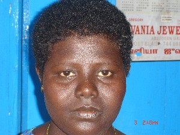 |
cɔk2 चौक N सं. face; चेहरा.  ɛr-cɔk ऐरचौक. his face. उसका चेहरा.
ɛr-cɔk ऐरचौक. his face. उसका चेहरा.  o-ʈʰɛr-cɔkel-ɑkkɑ-onno ओठैरचौकेलाक्काओन्नो. He is sitting in front of us. वह सामने बैठा है. SD: body part term, शारीरिक अंग शब्दावली. SEE: cɔk1 ‘do well’ ‘अच्छा करना चौकhm:{1}’.
o-ʈʰɛr-cɔkel-ɑkkɑ-onno ओठैरचौकेलाक्काओन्नो. He is sitting in front of us. वह सामने बैठा है. SD: body part term, शारीरिक अंग शब्दावली. SEE: cɔk1 ‘do well’ ‘अच्छा करना चौकhm:{1}’.
cɔkbitɑrɑɖiletmo चौक्बीताराडीलेत्मो MORPH: cɔkbi-tɑrɑ-ɖiletmo. N सं. urinary bladder of turtle; कछुए की पेशाब की थैली. SD: sports, खेल-कूद, body part term, शारीरिक अंग शब्दावली. NT: Used as a ball to play with. इसे गेंद के रूप में प्रयोग किया जाता है।.
cɔpʈʰomɔʈɔe चौप्ठोमौटौए MORPH: cɔp-ʈʰomɔ-ʈɔe. N सं. flesh on between thigh and foot; जांघ से पांव के बीच का मांस. ʈʰe-cɔp-ʈʰomɔ-ʈɔe ठेचौप्ठोमौटौए. flesh between my thigh and foot. मेरी जांघ से पांव तक का मांस. SD: body part term, शारीरिक अंग शब्दावली.
cɔrɔk चौरौक N सं. joint; जोड़. cɔrɔk tu-kʰulut चौरौक तू खूलूत. joint of knee. घुटने का जोड़. SD: body part term, शारीरिक अंग शब्दावली.
ebɑene एबाएने MORPH: e-bɑene. N सं. cover or mesh around intestine; आंत के पास का छिद्र या परत. ʈʰ-e-bɑene ठेबाएने. cover or mesh around my intestine. मेरी आंत के पास छिद्र या परत. SD: body part term, शारीरिक अंग शब्दावली.
ebɑlɑ एबाला MORPH: e-bɑlɑ. N सं. hand; arm; हाथ; बांह.  ʈʰ-e-bɑlɑ ठेबाला. my hand or arm. मेरा हाथ या बांह. SD: body part term, शारीरिक अंग शब्दावली.
ʈʰ-e-bɑlɑ ठेबाला. my hand or arm. मेरा हाथ या बांह. SD: body part term, शारीरिक अंग शब्दावली.
ebɑlɑtɑrɑɖole एबालाताराडोले MORPH: e-bɑlɑ-tɑrɑɖole. N सं. elbow; कोहनी. ʈʰe-bɑlɑ-tɑrɑɖole ठेबालाताराडोले. my elbow. मेरी कोहनी. SD: body part term, शारीरिक अंग शब्दावली.
ebɛc एबैच MORPH: e-bɛc. N सं. body hair; शरीर के बाल. kɔrɔn-e-bɛc कौरौनेबैच. dugong’s body hair. डूगोंग के शरीर के बाल. SD: body part term, शारीरिक अंग शब्दावली.
 ebicɔw एबीचौव N सं. posterior, of dugong; डूगोंग का पिछला हिस्सा. SD: body part term, शारीरिक अंग शब्दावली, marine, समुद्री.
ebicɔw एबीचौव N सं. posterior, of dugong; डूगोंग का पिछला हिस्सा. SD: body part term, शारीरिक अंग शब्दावली, marine, समुद्री.
 ebitɑrɑ एबीतारा MORPH: e-bitɑrɑ. N सं. back of the head; सिर का पिछला हिस्सा.
ebitɑrɑ एबीतारा MORPH: e-bitɑrɑ. N सं. back of the head; सिर का पिछला हिस्सा.  ʈʰe-bitɑrɑ ठेबीतारा. back side of my head. मेरे सिर का पिछला हिस्सा. SD: body part term, शारीरिक अंग शब्दावली.
ʈʰe-bitɑrɑ ठेबीतारा. back side of my head. मेरे सिर का पिछला हिस्सा. SD: body part term, शारीरिक अंग शब्दावली.
 ebitobɛc एबीतोबैच MORPH: e-bito-bɛc. N सं. pubic hair; गुप्त बाल.
ebitobɛc एबीतोबैच MORPH: e-bito-bɛc. N सं. pubic hair; गुप्त बाल.  ʈʰ-e-bito-bɛc ठेबीतोबैच. my pubic hair. मेरे गुप्त बाल. SD: body part term, शारीरिक अंग शब्दावली.
ʈʰ-e-bito-bɛc ठेबीतोबैच. my pubic hair. मेरे गुप्त बाल. SD: body part term, शारीरिक अंग शब्दावली.
ebitoʈoɔ एबीतोटोऔ MORPH: e-bitoʈoɔ. N सं. pelvis; श्रोणि. ʈʰ-e-bitoʈoɔ ठे बीतोटोऔ. my pelvis. मेरी श्रोणि. SD: body part term, शारीरिक अंग शब्दावली.
ebittɑrɑːʈɑːlɑːr एबीत्ताराऽटाऽलाऽर MORPH: e-bittɑrɑːʈɑːlɑːr. N सं. baldness at the back of the head; सिर के पीछे की गंज. SD: body part term, शारीरिक अंग शब्दावली.
ebiʈɔlɔm एबीटौलौम MORPH: e-biʈɔlɔm. Etym: Bo; बो. N सं. kidney; गुर्दा. SD: body part term, शारीरिक अंग शब्दावली. SEE: ɛttɑycow ‘kidney’ ‘गुर्दा ऐत्तायचोव ’.
ebotɑti एबोताती MORPH: e-bo-t-ɑ-ti. Etym: Little Andaman (Onge); ओंगे. N सं. eyelid; पलक. SD: body part term, शारीरिक अंग शब्दावली.
ebottɔe एबोत्तौए MORPH: e-bot-tɔe. N सं. hips; नितम्ब. ʈʰ-e-bot-tɔe ठेबोत्तौए. my hips. मेरे नितम्ब. SD: body part term, शारीरिक अंग शब्दावली.
ebucɔk एबूचौक MORPH: e-bucɔk. N सं. leg; पांव. ŋebucɔk ङेबूचौक. your leg. तुम्हारे पांव. SD: body part term, शारीरिक अंग शब्दावली.
eburɔŋo2 एबूरौङो MORPH: e-burɔŋo. VAR: eburoŋɔ एबूरोङौ. N सं. angle of a rib, side of the body; पसली का घुमाव, बदन का किनारा.  ʈʰɛ -buroŋo ठै बूरोङो. my angle of ribs. मेरी पसलियों का घुमाव. SD: body part term, शारीरिक अंग शब्दावली. SEE: eburɔŋo1 ‘edge’ ‘किनारा एबूरौङोhm:{1}’.
ʈʰɛ -buroŋo ठै बूरोङो. my angle of ribs. मेरी पसलियों का घुमाव. SD: body part term, शारीरिक अंग शब्दावली. SEE: eburɔŋo1 ‘edge’ ‘किनारा एबूरौङोhm:{1}’.
ecoroːkʰtɔbun एचोरोऽखतौबून MORPH: e-coroːkʰ-tɔbun. N सं. knee; घुटना. ʈʰe-coroːkʰtɔbun ठेचोरोऽखतौबून. my knee. मेरा घुटना. SD: body part term, शारीरिक अंग शब्दावली. SEE: ɑkɑpʰitcɔrok ‘area behind the knees’ ‘घुटनों का पिछला हिस्सा आकाफीतचौरोक ’.
ecorɔk एचोरौक MORPH: e-corɔk. N सं. elbow hinge; कोहनी का कब्ज़ा.  meŋ-e-corɔk मेङे चोरौक. hinge/ ball of our elbows. हमारी कोहनी का कब्ज़ा. SD: body part term, शारीरिक अंग शब्दावली.
meŋ-e-corɔk मेङे चोरौक. hinge/ ball of our elbows. हमारी कोहनी का कब्ज़ा. SD: body part term, शारीरिक अंग शब्दावली.
 ecoʈɔe1 एचोटौए MORPH: e-co-ʈɔe. N सं. head bone; सिर की हड्डी. ʈʰe-co-ʈɔe ठेचोटौए. my head bone. मेरे सिर की हड्डी. SD: body part term, शारीरिक अंग शब्दावली. SEE: ecoʈɔe2 ‘skull’ ‘खोपड़ी एचोटौएhm:{2}’.
ecoʈɔe1 एचोटौए MORPH: e-co-ʈɔe. N सं. head bone; सिर की हड्डी. ʈʰe-co-ʈɔe ठेचोटौए. my head bone. मेरे सिर की हड्डी. SD: body part term, शारीरिक अंग शब्दावली. SEE: ecoʈɔe2 ‘skull’ ‘खोपड़ी एचोटौएhm:{2}’.
 ecoʈɔe2 एचोटौए MORPH: e-co-ʈɔe. N सं. skull, lit. head bone; खोपड़ी, शाब्दिक अर्थः सिर की हड्डी. SD: body part term, शारीरिक अंग शब्दावली. SEE: ecoʈɔe1 ‘head bone’ ‘सिर की हड्डी एचोटौएhm:{1}’.
ecoʈɔe2 एचोटौए MORPH: e-co-ʈɔe. N सं. skull, lit. head bone; खोपड़ी, शाब्दिक अर्थः सिर की हड्डी. SD: body part term, शारीरिक अंग शब्दावली. SEE: ecoʈɔe1 ‘head bone’ ‘सिर की हड्डी एचोटौएhm:{1}’.
ecɔpʈʰomu एचौपठोमू MORPH: e-cɔp-ʈʰomu. N सं. thigh; जांघ. ʈʰe-cɔp-ʈʰomu ठेचौपठोमू. my thigh. मेरी जांघ. SD: body part term, शारीरिक अंग शब्दावली.
efuk एफूक MORPH: e-fuk. VAR: e-pʰup एफूप. N सं. lungs; फेफड़े. SD: body part term, शारीरिक अंग शब्दावली.
eišɔŋo एईशौङो MORPH: e-i-šɔŋo. VAR: cɔŋɔ चौङौ. N सं. body; बदन. meŋ-e-i-šoŋo मेङेईशोङो. our body. हमारा शरीर. ʈʰoicɔŋɔ ठोईचौङौ. my body. मेरा शरीर. SD: body part term, शारीरिक अंग शब्दावली.
ejilitobɛc एजीलीतोबैच MORPH: e-jilitobɛc. VAR: erjillitobɛc एरजील्लीतोबैच. N सं. eyebrows; भंवें; भौंहें. ʈʰ-e-jilitobɛc ठेजीलीतोबैच. my eyebrows. मेरी भृकुटी. SD: body part term, शारीरिक अंग शब्दावली.
ejilŋi एजीलङी MORPH: e-jilŋi. N सं. nerve; मेरी नस. ʈʰ-e-jilŋi ठेजीलङी. my nerve. मेरी नस. SD: body part term, शारीरिक अंग शब्दावली.
ekkɑːcoːme एक्काऽचोऽमे N सं. respiratory organs, of the fish; मछली का सांस लेने वाला अंग. SD: body part term, शारीरिक अंग शब्दावली, fish, मछली.
 ekɔrɔe एकौरौए MORPH: e-kɔrɔe. VAR: ɛkɔroy ऐकौरोय; e-kɔrɔŋ एकौरौङ. N सं. left hand; बायां हाथ.
ekɔrɔe एकौरौए MORPH: e-kɔrɔe. VAR: ɛkɔroy ऐकौरोय; e-kɔrɔŋ एकौरौङ. N सं. left hand; बायां हाथ.  ʈʰ-e-kɔrɔe ठेकौरौए. my left hand. मेरा बायां हाथ. SD: body part term, शारीरिक अंग शब्दावली.
ʈʰ-e-kɔrɔe ठेकौरौए. my left hand. मेरा बायां हाथ. SD: body part term, शारीरिक अंग शब्दावली.
 elonetercek एलोनेतेरचेक MORPH: elone-ter-cek. VAR: elonetɛrcɛk एलोनेतैरचैक. N सं. too much fat or oil of a turtle; कछुए की बहुत ज़्यादा चर्बी. SD: body part term, शारीरिक अंग शब्दावली. NT: This fat is sweet. यह चर्बी मीठी होती है।.
elonetercek एलोनेतेरचेक MORPH: elone-ter-cek. VAR: elonetɛrcɛk एलोनेतैरचैक. N सं. too much fat or oil of a turtle; कछुए की बहुत ज़्यादा चर्बी. SD: body part term, शारीरिक अंग शब्दावली. NT: This fat is sweet. यह चर्बी मीठी होती है।.
elonetɔleme एलोनेतौलेमे MORPH: elone-tɔleme. N सं. layer of fat; चर्बी की परत. SD: body part term, शारीरिक अंग शब्दावली.
emecɑ एमेचा MORPH: e-mecɑ. VAR: ɛmɛyccɑː ऐमैयच्चाऽ. N सं. liver; कलेजा. ŋ-emecɑ ङेमेचा. your liver. मेरा कलेजा. ʈʰ-e-mecɑ ठेमेचा. my liver. मेरा कलेजा. SD: body part term, शारीरिक अंग शब्दावली.
emɛcɑː एमैचाऽ MORPH: e-mɛcɑː. N सं. lungs; फेफड़े. ŋ-emɛcɑː ङेमैचाऽ. your lungs. तुम्हारे फेफड़े. SD: body part term, शारीरिक अंग शब्दावली.
 eŋet एङेत MORPH: e-ŋet. VAR: ɛ-ŋet ऐङेत. N सं. navel; नाभि.
eŋet एङेत MORPH: e-ŋet. VAR: ɛ-ŋet ऐङेत. N सं. navel; नाभि.  ʈʰ-ɛ-ŋet ठैङेत. my navel. मेरी नाभि. SD: body part term, शारीरिक अंग शब्दावली.
ʈʰ-ɛ-ŋet ठैङेत. my navel. मेरी नाभि. SD: body part term, शारीरिक अंग शब्दावली.
eŋto एङतो MORPH: eŋ-to. Etym: Bo; बो. N सं. arm; बांह. meŋ-to मेङतो. our arms. हमारी बांह. SD: body part term, शारीरिक अंग शब्दावली.
epʰilupʰet एफीलूफेत MORPH: e-pʰilu-pʰet. VAR: e-filu एफीलू. N सं. belly, big; मोटा पेट. ŋe-filu ङेफीलू. your belly. तुम्हारा पेट. ʈʰe-pʰilu-pʰet ठेफीलूफेत. my big belly. मेरा मोटा पेट. SD: body part term, शारीरिक अंग शब्दावली.
erɑbɑtʰe एराबाथे MORPH: erɑ-bɑtʰe. VAR: ɑrɑ-bɑte आराबाते. N सं. hind legs, of a turtle; कछुए के पिछले पांव. SD: body part term, शारीरिक अंग शब्दावली.
erɑːbɑʈ एराऽबाट N सं. tail of the turtle; कछुए की पूंछ. SD: body part term, शारीरिक अंग शब्दावली.
erɑɖileʈmo एराडीलेट्मो MORPH: erɑ-ɖileʈmo. N सं. urinary bladder; मूत्राशय. SD: body part term, शारीरिक अंग शब्दावली.
erɑkɑrɑpjiriŋe एराकारापजीरीङे MORPH: erɑ-kɑrɑp-jiriŋe. N सं. upper part, of the waist; कमर का ऊपर का भाग. SD: body part term, शारीरिक अंग शब्दावली.
erɑkobu एराकोबू MORPH: erɑ-kobu. N सं. fin; मछली का पिछला हिस्सा. kɔrɔi tɑrɑ kobu कौरौई तारा कोबू. back fin of dugong. डूगोंग का पिछला हिस्सा. SD: body part term, शारीरिक अंग शब्दावली.
erbɑt1 एरबात MORPH: er-bɑt. VAR: erbɑːʈ एरबाऽट. N सं. fin; सुफना; मछली का पंख; मछली का पिछला हिस्सा. SD: fish, मछली, body part term, शारीरिक अंग शब्दावली. SEE: erbɑt2 ‘penis’ ‘लिंग एरबातhm:{2}’.
erbɑt2 एरबात MORPH: er-bɑt. VAR: er-bɑʈ एरबाट; erbɑːʈ एरबाऽट. N सं. penis; लिंग. ʈʰ-er-bɑt ठेरबात. my penis. मेरा लिंग. SD: body part term, शारीरिक अंग शब्दावली. SEE: erbɑt1 ‘fin’ ‘सुफना एरबातhm:{1}’.
erbɑte एरबाते VAR: erbɑtʰe एरबाथे. N सं. flippers; forelegs, of a turtle; hands, of a Dugong; कछुए की अगली टांग; डूगोंग के हाथ. SD: body part term, शारीरिक अंग शब्दावली.
erben एरबेन MORPH: er-ben. N सं. forehead; माथा. ʈʰ-er-ben ठेरबेन. my forehead. मेरा माथा. SD: body part term, शारीरिक अंग शब्दावली.
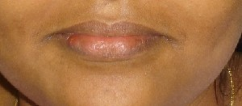 |
erboɑ1 एरबोआ MORPH: er-boɑ. N सं. lips; होंठ. meŋer-boɑ मेङेर बोआ. our lips. हमारे होंठ.  ʈʰ-er-boɑ ठेरबोआ. my lips. मेरे होंठ. SD: body part term, शारीरिक अंग शब्दावली. SEE: erboɑ2 ‘mouth’ ‘मुंह एरबोआhm:{2}’.
ʈʰ-er-boɑ ठेरबोआ. my lips. मेरे होंठ. SD: body part term, शारीरिक अंग शब्दावली. SEE: erboɑ2 ‘mouth’ ‘मुंह एरबोआhm:{2}’.
 erboɑ2 एरबोआ MORPH: er-boɑ. N सं. mouth; मुंह. meŋ-er-boɑ मेङेरबोआ. our mouths. हमारा मुंह. SD: body part term, शारीरिक अंग शब्दावली. SEE: erboɑ1 ‘lips’ ‘होंठ एरबोआhm:{1}’.
erboɑ2 एरबोआ MORPH: er-boɑ. N सं. mouth; मुंह. meŋ-er-boɑ मेङेरबोआ. our mouths. हमारा मुंह. SD: body part term, शारीरिक अंग शब्दावली. SEE: erboɑ1 ‘lips’ ‘होंठ एरबोआhm:{1}’.
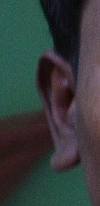 |
 erbuo एरबूओ MORPH: er-buo. VAR: er-bu एरबू. N सं. ears; कान. ʈʰ-er-buo ठेरबूओ. my ears. मेरे कान. meŋ-er-bu मेङेरबू. our ears. हमारे कान. SD: body part term, शारीरिक अंग शब्दावली.
erbuo एरबूओ MORPH: er-buo. VAR: er-bu एरबू. N सं. ears; कान. ʈʰ-er-buo ठेरबूओ. my ears. मेरे कान. meŋ-er-bu मेङेरबू. our ears. हमारे कान. SD: body part term, शारीरिक अंग शब्दावली.
erbuoʈɑrɑtʰɑrɑle एरबूओटाराथाराले MORPH: er-buo-ʈɑrɑ-tʰ-ɑrɑle. N सं. ear lobe; कान पालि. ʈʰer-buo-ʈɑrɑ-tʰ-ɑrɑle ठेरबूओटाराथाराले. my ear lobe. मेरी कान पालि. SD: body part term, शारीरिक अंग शब्दावली.
 ercɔk एरचौक MORPH: er-cɔk. VAR: er-cɔːk एरचौऽक; ɛr-cɔk ऐरचौक. N सं. face; चेहरा. ʈʰ-er-cɔk ठेर चौक. my face. मेरा चेहरा. SD: body part term, शारीरिक अंग शब्दावली. SEE: ɑcɔkʰɔ1 ‘side’ ‘तरफ़ आचौखौhm:{1}’.
ercɔk एरचौक MORPH: er-cɔk. VAR: er-cɔːk एरचौऽक; ɛr-cɔk ऐरचौक. N सं. face; चेहरा. ʈʰ-er-cɔk ठेर चौक. my face. मेरा चेहरा. SD: body part term, शारीरिक अंग शब्दावली. SEE: ɑcɔkʰɔ1 ‘side’ ‘तरफ़ आचौखौhm:{1}’.
erjili1 एरजीली MORPH: er-jili. N सं. bone above eyebrows; भौंहों के ऊपर की हड्डी. ʈʰ-er-jili ठेरजीली. bone above my eyebrows. मेरी भौंहों के ऊपर की हड्डी. SD: body part term, शारीरिक अंग शब्दावली. SEE: erjili2 ‘eyebrows’ ‘भवें; भौंहें एरजीलीhm:{2}’.
erjili2 एरजीली MORPH: er-jili. N सं. eyebrows; भंवें; भौंहें. ʈʰer-jili ठेरजीली. my eyebrows. मेरी भंवें. SD: body part term, शारीरिक अंग शब्दावली. SEE: erjili1 ‘bone above eyebrows’ ‘हड्डी, भौंहों के ऊपर की एरजीलीhm:{1}’.
erjireŋe एरजीरेङे MORPH: er-jireŋe. N सं. nails; नाख़ून. meŋer-jireŋe मेङेरजीरेङे. our nails. हमारे नाख़ून. SD: body part term, शारीरिक अंग शब्दावली.
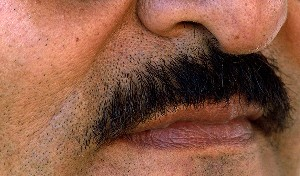 |
 erjukʰubɛc एरजूखूबैच MORPH: er-jukʰu-bɛc. VAR: ɛr-jukʰu-bɛc ऐरजूखूबैच. N सं. moustache; मूंछ.
erjukʰubɛc एरजूखूबैच MORPH: er-jukʰu-bɛc. VAR: ɛr-jukʰu-bɛc ऐरजूखूबैच. N सं. moustache; मूंछ.  ʈʰerjukʰubɛc ठेरजूखूबैच. my moustache. मेरी मूंछ. SD: body part term, शारीरिक अंग शब्दावली.
ʈʰerjukʰubɛc ठेरजूखूबैच. my moustache. मेरी मूंछ. SD: body part term, शारीरिक अंग शब्दावली.
erkɑrɑ1 एरकारा MORPH: er-kɑrɑ. Etym: Bo; बो. N सं. vagina; umbilical cord; योनि; नाभि-नाड़ी. SD: body part term, शारीरिक अंग शब्दावली. SEE: erkɑrɑ2 ‘weak sight’ ‘कमजोर नज़र एरकाराhm:{2}’; erkɑrɑ3 ‘weak sighted’ ‘कमजोर नज़र वाला एरकाराhm:{3}’.
erkʰit एरखीत MORPH: er-kʰit. N सं. biceps; डोले. ʈʰ-er-kʰit ठेरखीत. my biceps. मेरे डोले. SD: body part term, शारीरिक अंग शब्दावली.
erkɔbɔ एरकौबौ MORPH: er-kɔbɔ. N सं. scalp; सिर की खाल. ʈʰ-er-kɔbɔ ठेरकौबौ. my scalp. मेरे सिर की खाल. SD: body part term, शारीरिक अंग शब्दावली.
 erkɔtʰotɑrɑpʰoŋ एरकौथोताराफोङ MORPH: er-kɔtʰo-tɑrɑpʰoŋ. VAR: ɛr-kɔtʰo-tɑrɑ-pʰoŋ ऐरकौठोटाराफोङ. N सं. nostrils; नथुना; रन्ध्र.
erkɔtʰotɑrɑpʰoŋ एरकौथोताराफोङ MORPH: er-kɔtʰo-tɑrɑpʰoŋ. VAR: ɛr-kɔtʰo-tɑrɑ-pʰoŋ ऐरकौठोटाराफोङ. N सं. nostrils; नथुना; रन्ध्र.  ʈʰ-er-kɔtʰo-tɑrɑpʰoŋ ठेरकौथोताराफोङ. my nostrils. मेरा नथुना. SD: body part term, शारीरिक अंग शब्दावली.
ʈʰ-er-kɔtʰo-tɑrɑpʰoŋ ठेरकौथोताराफोङ. my nostrils. मेरा नथुना. SD: body part term, शारीरिक अंग शब्दावली.
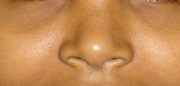 |
 erkɔʈʰo एरकौठो MORPH: er-kɔʈʰo. VAR: ɛr-kɔʈʰo ऐरकौठो. N सं. nose; नाक.
erkɔʈʰo एरकौठो MORPH: er-kɔʈʰo. VAR: ɛr-kɔʈʰo ऐरकौठो. N सं. nose; नाक.  ʈʰ-ɛr-kɔʈʰo ठैरकौठो. my nose. मेरी नाक.
ʈʰ-ɛr-kɔʈʰo ठैरकौठो. my nose. मेरी नाक.  meŋ-er-kɔtʰo मेङेरकौथो. our noses. हमारी नाक. SD: body part term, शारीरिक अंग शब्दावली.
meŋ-er-kɔtʰo मेङेरकौथो. our noses. हमारी नाक. SD: body part term, शारीरिक अंग शब्दावली.
erkɔʈʰoʈɑrɑbec एरकौठोटाराबेच MORPH: er-kɔʈʰo-ʈɑr-ɑ-bec. N सं. nose hair; नाक का बाल. SD: body part term, शारीरिक अंग शब्दावली.
erkʰulme एरखूलमे MORPH: er-kʰulme. VAR: er-xolme एरखोलमे. N सं. cheekbone; गाल की हड्डी. ŋerkʰulme ङेरखूलमे. your cheekbone. तुम्हारे गाल की हड्डी. SD: body part term, शारीरिक अंग शब्दावली.
erlɑyu एरलायू MORPH: er-lɑyu. N सं. wrinkles; झुर्रियां. ʈʰ-erlɑyu ठेरलायू. my wrinkles. मेरी झुर्रियां. SD: body part term, शारीरिक अंग शब्दावली.
erlɔ एरलौ MORPH: er-lɔ. N सं. mole; तिल. ŋerlɔ ङेरलौ. your mole. तुम्हारा तिल. SD: body part term, शारीरिक अंग शब्दावली. SEE: nɑmu ‘wart; mole’ ‘मस्सा; तिल नामू ’.
 ermetɛi1 एरमेतैई MORPH: er-me-tɛi. N सं. mother’s breast; मां के स्तन. SD: body part term, शारीरिक अंग शब्दावली. SEE: ermetɛi2 ‘milk’ ‘दूध एरमेतैईhm:{2}’.
ermetɛi1 एरमेतैई MORPH: er-me-tɛi. N सं. mother’s breast; मां के स्तन. SD: body part term, शारीरिक अंग शब्दावली. SEE: ermetɛi2 ‘milk’ ‘दूध एरमेतैईhm:{2}’.
ermine1 एरमीने MORPH: er-mine. N सं. brain; दिमाग. ʈʰ-er-mine ठेर मीने. my brain. मेरा दिमाग. SD: body part term, शारीरिक अंग शब्दावली. SEE: ermine2 ‘marrow’ ‘वसा, हड्डी के अंदर की एरमीनेhm:{2}’.
ermine2 एरमीने MORPH: er-mine. N सं. fat inside the bone; हड्डी के अंदर की वसा. SD: body part term, शारीरिक अंग शब्दावली. SEE: ermine1 ‘brain’ ‘दिमाग एरमीनेhm:{1}’.
erɔlɔʈɔye एरौलौटौये MORPH: er-ɔlɔ-ʈɔye. N सं. horn; सींग. SD: body part term, शारीरिक अंग शब्दावली.
erpʰiletɑrɑtʰɑrɑle एरफीलेताराथाराले MORPH: er-pʰile-tɑrɑ-tʰɑrɑle. N सं. gums; मसूड़े. ʈʰ-er-pʰile-tɑrɑ-tʰɑrɑle ठेरफीलेताराथाराले. my gums. मेरे मसूड़े. SD: body part term, शारीरिक अंग शब्दावली.
erpʰileʈɔbɔ एरफीलेटौबौ MORPH: er-pʰile-ʈɔbɔ. N सं. dental cavity; दांत की गुहिका. SD: body part term, शारीरिक अंग शब्दावली.
erpʰiʈukʰulut एरफीटूखूलूत MORPH: er-pʰi-ʈu-kʰulut. N सं. shoulder joint; कंधा. ʈʰer-pʰi-ʈu-kʰulut ठेरफीटूखूलूत. my shoulder joint. मेरा कंधा. SD: body part term, शारीरिक अंग शब्दावली.
erpʰoŋ एरफोङ MORPH: er-pʰoŋ. N सं. mouth; मुंह. ʈʰ-er-pʰoŋ ठेरफोङ. my mouth. मेरा मुंह. SD: body part term, शारीरिक अंग शब्दावली.
ertɑːŋŋɔ एरताऽङ्ङौ MORPH: er-tɑːŋŋɔ. N सं. the flattened region on either side of the forehead in human being, the temple; कनपटी. ŋ-ertɑːŋŋɔ ङेरताऽङ्ङौ. your temple. तुम्हारी कनपटी. SD: body part term, शारीरिक अंग शब्दावली.
ertɑp एरताप MORPH: er-tɑp. N सं. lower jaw; निचला जबड़ा. ʈʰ-er-tɑp ठेरताप. my lower jaw. मेरा निचला जबड़ा. SD: body part term, शारीरिक अंग शब्दावली.
 ertɑpbɛc एरताप्बैच MORPH: er-tɑp-bɛc. VAR: ertɑːpbɛc एरताऽप्बैच; tɑp-bec तापबेच. N सं. beard; दाढ़ी. ʈʰ-er-tɑp-bɛc ठेरताप्बैच. my beard. मेरी दाढ़ी. SD: body part term, शारीरिक अंग शब्दावली.
ertɑpbɛc एरताप्बैच MORPH: er-tɑp-bɛc. VAR: ertɑːpbɛc एरताऽप्बैच; tɑp-bec तापबेच. N सं. beard; दाढ़ी. ʈʰ-er-tɑp-bɛc ठेरताप्बैच. my beard. मेरी दाढ़ी. SD: body part term, शारीरिक अंग शब्दावली.
ertʰɑrɑle एरथाराले MORPH: er-tʰɑrɑle. N सं. gums; मसूड़े. meŋer-tʰɑrɑle मेङेरथाराले. our gums. हमारे मसूड़े. SD: body part term, शारीरिक अंग शब्दावली.
ertei एरतेई MORPH: er-tei. N सं. caul, a part of the amnion sometimes covering the head of a child at birth; जरायु. SD: body part term, शारीरिक अंग शब्दावली.
ertek एरतेक MORPH: er-tek. N सं. waist, above hip bone; कमर (नितम्ब की हड्डी के ऊपर). SD: body part term, शारीरिक अंग शब्दावली.
ertʰiu एरथीऊ MORPH: er-tʰiu. VAR: er-ʈʰiu एरठीऊ. N सं. shadow; छाया या परछाईं. ʈʰer-tʰiu ठेरथीऊ. my shadow. मेरी छाया. SD: body part term, शारीरिक अंग शब्दावली.
erʈoŋ एरटोङ MORPH: er-ʈoŋ. VAR: er-ʈɔŋ एरटौङ. N सं. hand; हाथ.  ʈʰer-ʈɔŋ ठेरटौङ. my hand. मेरे हाथ. ŋer-ʈɔŋ ङेरटौङ. your hand. तुम्हारा हाथ. SD: body part term, शारीरिक अंग शब्दावली.
ʈʰer-ʈɔŋ ठेरटौङ. my hand. मेरे हाथ. ŋer-ʈɔŋ ङेरटौङ. your hand. तुम्हारा हाथ. SD: body part term, शारीरिक अंग शब्दावली.
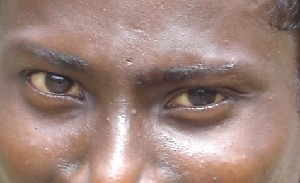 |
 erulu एरूलू MORPH: er-ulu. VAR: ɛr-ulu ऐरूलू; ɛr-uwu ऐरऊवू. N सं. eyes; आंखें.
erulu एरूलू MORPH: er-ulu. VAR: ɛr-ulu ऐरूलू; ɛr-uwu ऐरऊवू. N सं. eyes; आंखें.  ʈʰ-ɛ-rulu ठैरूलू. my eyes. मेरी आंखें. SD: body part term, शारीरिक अंग शब्दावली.
ʈʰ-ɛ-rulu ठैरूलू. my eyes. मेरी आंखें. SD: body part term, शारीरिक अंग शब्दावली.
 erulutobɛc एरूलूतोबैच MORPH: e-rulu-to-bɛc. VAR: e-rulu-ʈobɛc एरूलूटोबैच; ɛrulu-tu-bɛc ऐरूलूतूबैच; erulutotbeːc एरूलूतोतबेऽच. N सं. eyelashes; पलकों के बाल; बरौनी.
erulutobɛc एरूलूतोबैच MORPH: e-rulu-to-bɛc. VAR: e-rulu-ʈobɛc एरूलूटोबैच; ɛrulu-tu-bɛc ऐरूलूतूबैच; erulutotbeːc एरूलूतोतबेऽच. N सं. eyelashes; पलकों के बाल; बरौनी.  ʈʰ-e-rulu-to-bɛc ठेरूलू तो बैच. my eyelashes. मेरी बरौनी. ŋ-erulutotbeːc ङेरूलूतोतबेऽच. your eyelash. तुम्हारी आंख की पुतली. SD: body part term, शारीरिक अंग शब्दावली.
ʈʰ-e-rulu-to-bɛc ठेरूलू तो बैच. my eyelashes. मेरी बरौनी. ŋ-erulutotbeːc ङेरूलूतोतबेऽच. your eyelash. तुम्हारी आंख की पुतली. SD: body part term, शारीरिक अंग शब्दावली.
erulutoboːk एरूलूतोबोऽक MORPH: er-ulutoboːk. N सं. eyebrows; भंवें; भौंहें. ŋ-erulutoboːk ङेरूलूतोबोऽक. your eyebrow. तुम्हारी भंवें. SD: body part term, शारीरिक अंग शब्दावली.
 erulutokɔbo एरूलूतोकौबो MORPH: e-rulu-to-kɔbo. VAR: e-rulu-ʈo-kɔbɔ एरूलूटोकौबौ. N सं. eyelid; पलक.
erulutokɔbo एरूलूतोकौबो MORPH: e-rulu-to-kɔbo. VAR: e-rulu-ʈo-kɔbɔ एरूलूटोकौबौ. N सं. eyelid; पलक.  ʈʰ-e-rulu-to-kɔbo ठेरूलूतोकौबो. my eyelids. मेरी पलकें. SD: body part term, शारीरिक अंग शब्दावली.
ʈʰ-e-rulu-to-kɔbo ठेरूलूतोकौबो. my eyelids. मेरी पलकें. SD: body part term, शारीरिक अंग शब्दावली.
erulutotʈɔlɔːʈmo एरूलूतोतटौलौऽटमो N सं. cornea of the eye; आंख का तारा. ŋ-erulutotʈɔlɔːʈmo ङेरूलूतोतटौलौऽटमो. cornea of your eye. तुम्हारी आंख का तारा. SD: body part term, शारीरिक अंग शब्दावली.
erulututɖirim एरूलूतूतडीरीम MORPH: er-ulu-tut-ɖirim. N सं. iris; नेत्रगोलक. ŋ-erulututɖirim ङेरूलूतूतडीरीम. your iris. आपकी आंख की पुतली. SD: body part term, शारीरिक अंग शब्दावली.
erulututʈɔlɔmo एरूलूतूत्टौलौमो MORPH: e-rulu-tut-ʈɔlɔmo. N सं. white portion of eyes; आंखों का सफ़ेद भाग. ʈʰe-rulu-tut-ʈɔlɔmo ठेररूलूतूत्टौलौमो. the white portion of my eyes. मेरी आंखों का सफ़ेद भाग. SD: body part term, शारीरिक अंग शब्दावली.
erxiːʈ एरख़ीऽट MORPH: er-xiːʈ. N सं. arm; बांह. ŋ-erxiːʈ ङेरख़ीऽट. arm (your). बांह (तुम्हारी). SD: body part term, शारीरिक अंग शब्दावली.
eširo एशीरो N सं. fat (his); चर्बी (उसकी). SD: body part term, शारीरिक अंग शब्दावली.
esudu एसूदू MORPH: e-sudu. VAR: i-šuɖu ईशूडू. N सं. intestines; अंतड़ियां. ʈʰ-e-sudu ठेसूदू. my intestines. मेरी अंतड़ियां. SD: body part term, शारीरिक अंग शब्दावली.
 etcɛ एतचै MORPH: et-cɛ. VAR: et-ce एतचे. N सं. gill of river fish; नदी की मछली का गलफड़ा. SD: fish, मछली, body part term, शारीरिक अंग शब्दावली.
etcɛ एतचै MORPH: et-cɛ. VAR: et-ce एतचे. N सं. gill of river fish; नदी की मछली का गलफड़ा. SD: fish, मछली, body part term, शारीरिक अंग शब्दावली.
etcol एतचोल MORPH: et-col. VAR: etcor एतचोर. MORPH: et-cor. N सं. fish gill; मछली का गलफड़ा. SD: body part term, शारीरिक अंग शब्दावली, fish, मछली.
eteɖu एतेडू MORPH: e-teɖu. N सं. bile; पित्त. ʈʰ-e-teɖu ठेतेडू. my bile. मेरा पित्त. SD: body part term, शारीरिक अंग शब्दावली.
 etei एतेई MORPH: e-tei. VAR: ɛ-tei ऐतेई. N सं. blood; ख़ून.
etei एतेई MORPH: e-tei. VAR: ɛ-tei ऐतेई. N सं. blood; ख़ून.  ʈʰ-e-tei ठेतेई. my blood. मेरा ख़ून. SD: body part term, शारीरिक अंग शब्दावली.
ʈʰ-e-tei ठेतेई. my blood. मेरा ख़ून. SD: body part term, शारीरिक अंग शब्दावली.
 etemic एतेमीच MORPH: e-temic. VAR: ɛtɛmic ऐतैमीच; e-ʈʰe-mic एठेमीच; e-cɔkʰɔ एचौखौ; e-ʈemik एटेमीक. N सं. right hand, lit. fingers of the hand used for eating, i.e. the right hand; दायां हाथ, शाब्दिक अर्थः उस हाथ की उंगलियां जिससे खाना खाते हैं अर्थात् दाहिना हाथ.
etemic एतेमीच MORPH: e-temic. VAR: ɛtɛmic ऐतैमीच; e-ʈʰe-mic एठेमीच; e-cɔkʰɔ एचौखौ; e-ʈemik एटेमीक. N सं. right hand, lit. fingers of the hand used for eating, i.e. the right hand; दायां हाथ, शाब्दिक अर्थः उस हाथ की उंगलियां जिससे खाना खाते हैं अर्थात् दाहिना हाथ.  ʈʰ-e-temic ठेतेमीच. my right hand. मेरा दाहिना हाथ. SD: body part term, शारीरिक अंग शब्दावली.
ʈʰ-e-temic ठेतेमीच. my right hand. मेरा दाहिना हाथ. SD: body part term, शारीरिक अंग शब्दावली.
 |
etkɔbo3 एतकौबो MORPH: et-kɔbo. N सं. skin; fish skin; खाल; मछली की खाल. SD: fish, मछली, body part term, शारीरिक अंग शब्दावली. SEE: etkɔbo1 ‘bark’ ‘छाल एत्कौबोhm:{1}’; etkɔbo2 ‘shell’ ‘सीपी एत्कौबोhm:{2}’.
etkɔbɔʈɑre एत्कौबौटारे MORPH: et-kɔbɔ-ʈɑre. N सं. thin skin; पतली चमड़ी. SD: body part term, शारीरिक अंग शब्दावली.
etɲe एत्ञ्ये MORPH: et-ɲe. N सं. spines; मछली का बाहरी कांटा. SD: body part term, शारीरिक अंग शब्दावली, fish, मछली.
etɔe एतौए MORPH: e-tɔe. VAR: e-ʈɔi एटौइ; e-ʈʈɔːy एट्टौऽय. N सं. bone; हड्डी. meŋ-e-tɔe मेङ-ए-तौए. our bones. हमारी हड्डी. SD: body part term, शारीरिक अंग शब्दावली.
 eʈɑp एटाप VAR: ɛrtɑp ऐरताप; er-tɑːp एरताऽप. N सं. chin; ठुड्डी.
eʈɑp एटाप VAR: ɛrtɑp ऐरताप; er-tɑːp एरताऽप. N सं. chin; ठुड्डी.  ʈʰ-ɛr-tɑp ठैरताप. my chin. मेरी ठुड्डी. SD: body part term, शारीरिक अंग शब्दावली.
ʈʰ-ɛr-tɑp ठैरताप. my chin. मेरी ठुड्डी. SD: body part term, शारीरिक अंग शब्दावली.
eʈɑpcɔb एटापचौब MORPH: eʈɑp-cɔb. N सं. lower jaw bone; निचले जबड़े की हड्डी. SD: body part term, शारीरिक अंग शब्दावली.
eʈoe एटोए MORPH: e-ʈoe. VAR: ɛ-ʈɔɛ ऐटौऐ. N सं. backbone; रीढ़ की हड्डी.  ʈʰ-e-ʈoe ठेटोए. my backbone. मेरी रीढ़ की हड्डी. SD: body part term, शारीरिक अंग शब्दावली.
ʈʰ-e-ʈoe ठेटोए. my backbone. मेरी रीढ़ की हड्डी. SD: body part term, शारीरिक अंग शब्दावली.
 eʈɔytɑrɑtʰomɔ एटौयताराथोमौ MORPH: e-ʈɔy-tɑrɑ-tʰomɔ. VAR: ɛrʈɔytɑrɑtʰomo ऐरटौयताराथोमो. N सं. calf muscle; पिण्डली की मांसपेशी.
eʈɔytɑrɑtʰomɔ एटौयताराथोमौ MORPH: e-ʈɔy-tɑrɑ-tʰomɔ. VAR: ɛrʈɔytɑrɑtʰomo ऐरटौयताराथोमो. N सं. calf muscle; पिण्डली की मांसपेशी.  ʈʰɛ-ʈɔy-tɑrɑ-tʰomɔ ठैटौयताराथोमौ. my calf muscle. मेरी पिण्डली की मांसपेशी. SD: body part term, शारीरिक अंग शब्दावली.
ʈʰɛ-ʈɔy-tɑrɑ-tʰomɔ ठैटौयताराथोमौ. my calf muscle. मेरी पिण्डली की मांसपेशी. SD: body part term, शारीरिक अंग शब्दावली.
eʈɔyʈɔluic एटौयटौलूईच MORPH: e-ʈɔyʈɔluic. N सं. cartilage; उपास्थि. SD: body part term, शारीरिक अंग शब्दावली.
eʈʈɔːy tɑrɑːtoːmo एट्टौऽय ताराऽतोऽमो N सं. foreleg; अगली टांग. SD: body part term, शारीरिक अंग शब्दावली.
 |
eutliːp एऊत्लीऽप MORPH: e-utliːp. N सं. skin; त्वचा. ŋeutliːp ङेऊतलीऽप. your skin. तुम्हारी त्वचा. SD: body part term, शारीरिक अंग शब्दावली.
ewoʈɔːy एवोटौऽय N सं. shoulder bone; कंधे की हड्डी. ŋewoʈɔːy ङेवोटौऽय. your shoulder bone. तुम्हारी कंधे की हड्डी. SD: body part term, शारीरिक अंग शब्दावली.
ɛbot ऐबोत MORPH: ɛ-bot. N सं. thigh; जांघ. SD: body part term, शारीरिक अंग शब्दावली.
ɛbucɔ ऐबूचौ MORPH: ɛ-bucɔ. Etym: Sare; सारे. VAR: e-bucɔ एबूचौ. N सं. thigh; जांघ.  ʈʰ-e-bucɔ ठेबूचौ. my thigh. मेरी जांघ. SD: body part term, शारीरिक अंग शब्दावली.
ʈʰ-e-bucɔ ठेबूचौ. my thigh. मेरी जांघ. SD: body part term, शारीरिक अंग शब्दावली.
 ɛcorɔk ऐचोरौक MORPH: ɛ-corɔk. VAR: curok चूरोक. N सं. knee; घुटना.
ɛcorɔk ऐचोरौक MORPH: ɛ-corɔk. VAR: curok चूरोक. N सं. knee; घुटना.  ʈʰ-ɛ-corokʰ ठैचोरोख. my knee. मेरा घुटना. SD: body part term, शारीरिक अंग शब्दावली. SEE: ɑkɑpʰitcɔrok ‘area behind the knees’ ‘घुटनों का पिछला हिस्सा आकाफीतचौरोक ’.
ʈʰ-ɛ-corokʰ ठैचोरोख. my knee. मेरा घुटना. SD: body part term, शारीरिक अंग शब्दावली. SEE: ɑkɑpʰitcɔrok ‘area behind the knees’ ‘घुटनों का पिछला हिस्सा आकाफीतचौरोक ’.
ɛko ऐको N सं. skin, of the stomach of turtles; कछुए के पेट की चमड़ी. SD: body part term, शारीरिक अंग शब्दावली.
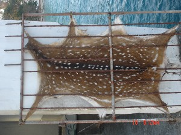 |
ɛkobɔ ऐकोबौ MORPH: ɛ-kobɔ. N सं. skin; त्वचा. ʈʰ-ɛ-kobɔ ठैकोबौ. my skin. मेरी त्वचा. SD: body part term, शारीरिक अंग शब्दावली.
 ɛkotrɑtɑrɑtɑ ऐकोत्राताराता MORPH: ɛ-kotrɑ-tɑrɑ-tɑ. N सं. pelvis; श्रोणि.
ɛkotrɑtɑrɑtɑ ऐकोत्राताराता MORPH: ɛ-kotrɑ-tɑrɑ-tɑ. N सं. pelvis; श्रोणि.  ʈʰɛkotrɑtɑrɑtɑ ठैकोत्राताराता. my pelvis. मेरी श्रोणि. SD: body part term, शारीरिक अंग शब्दावली.
ʈʰɛkotrɑtɑrɑtɑ ठैकोत्राताराता. my pelvis. मेरी श्रोणि. SD: body part term, शारीरिक अंग शब्दावली.
ɛrbɑlɑ ऐरबाला MORPH: ɛr-bɑlɑ. N सं. upper arm; बांह का ऊपरी हिस्सा. SD: body part term, शारीरिक अंग शब्दावली. ʈʰɛrbɑlɑ ठैरबाला. my upper arm. मेरी बांह का ऊपरी हिस्सा.
 ɛrco2 ऐरचो MORPH: ɛr-co. VAR: er-co एरचो. Etym: North Andaman; उत्तरी अण्डमान. VAR: ɛco ऐचो. N सं. head; skull; सिर; खोपड़ी. ʈʰerco ठेरचो. my head. मेरा सिर. SD: body part term, शारीरिक अंग शब्दावली. SEE: ɛrco1 ‘fruit’ ‘फल ऐरचोhm:{1}’.
ɛrco2 ऐरचो MORPH: ɛr-co. VAR: er-co एरचो. Etym: North Andaman; उत्तरी अण्डमान. VAR: ɛco ऐचो. N सं. head; skull; सिर; खोपड़ी. ʈʰerco ठेरचो. my head. मेरा सिर. SD: body part term, शारीरिक अंग शब्दावली. SEE: ɛrco1 ‘fruit’ ‘फल ऐरचोhm:{1}’.
ɛrcotɑrɑtɑ ऐरचोताराता MORPH: ɛr-co-tɑrɑ-tɑ. N सं. back of the head; सिर का पिछला हिस्सा.  ʈʰɛr-co-tɑrɑ-tɑ ठैरचोताराता. back of my head. मेरे सिर का पिछला हिस्सा. SD: body part term, शारीरिक अंग शब्दावली.
ʈʰɛr-co-tɑrɑ-tɑ ठैरचोताराता. back of my head. मेरे सिर का पिछला हिस्सा. SD: body part term, शारीरिक अंग शब्दावली.
ɛrcouttɑrɑ ऐरचोऊत्तारा MORPH: ɛr-co-ut-tɑrɑ. N सं. top of the head; कपाल. SD: body part term, शारीरिक अंग शब्दावली.
ɛrjukʰu1 ऐरजूखू MORPH: ɛr-jukʰu. VAR: erjuxu एरजूखू. N सं. beak; चोंच. SD: body part term, शारीरिक अंग शब्दावली. SEE: ɛrjukʰu2 ‘space between nose and lips’ ‘नाक और होंठ के बीच का स्थान ऐरजूखूhm:{2}’.
ɛrjukʰu2 ऐरजूखू MORPH: ɛr-jukʰu. VAR: er-jukʰu एरजूखू. N सं. space between nose and lips; नाक और होंठ के बीच का स्थान. ʈʰ-er-jukʰu ठेरजूखू. my moustache. मेरी मूंछ. SD: body part term, शारीरिक अंग शब्दावली. SEE: ɛrjukʰu1 ‘beak’ ‘चोंच ऐरजूखूhm:{1}’.
ɛrkɔʈʰɔʈɔi ऐरकौठौटौई MORPH: ɛr-kɔʈʰɔ-ʈɔi. N सं. sinew; नस. ʈʰ-ɛrkɔʈʰɔʈɔi ठैरकौठौटौई. my sinew. मेरी नस. SD: body part term, शारीरिक अंग शब्दावली.
ɛrlɔcɔŋ1 ऐरलौचौङ MORPH: ɛr-lɔcɔŋ. N सं. horn; सींग. SD: body part term, शारीरिक अंग शब्दावली. SEE: ɛrlɔcɔŋ2 ‘point of an arrow’ ‘तीर की नोक ऐरलौचौङhm:{2}’.
 ɛrmotoʈɔy ऐरमोतोटौय MORPH: ɛr-moto-ʈɔy. N सं. calf bone; पिण्डली की हड्डी. ʈʰ-ɛr-moto-ʈɔy ठैरमोतोटौय. my calf bone. मेरी पिण्डली की हड्डी. SD: body part term, शारीरिक अंग शब्दावली.
ɛrmotoʈɔy ऐरमोतोटौय MORPH: ɛr-moto-ʈɔy. N सं. calf bone; पिण्डली की हड्डी. ʈʰ-ɛr-moto-ʈɔy ठैरमोतोटौय. my calf bone. मेरी पिण्डली की हड्डी. SD: body part term, शारीरिक अंग शब्दावली.
 ɛrnɔkʰo ऐरनौखो MORPH: ɛr-nɔkʰo. N सं. cheeks; गाल. ʈʰ-ɛr-nɔkʰo ठेरनौखो. my cheeks. मेरे गाल. SD: body part term, शारीरिक अंग शब्दावली.
ɛrnɔkʰo ऐरनौखो MORPH: ɛr-nɔkʰo. N सं. cheeks; गाल. ʈʰ-ɛr-nɔkʰo ठेरनौखो. my cheeks. मेरे गाल. SD: body part term, शारीरिक अंग शब्दावली.
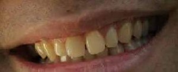 |
 ɛrpʰile2 ऐरफीले VAR: ɛrɸiwe ऐरफीवे. N सं. teeth; दांत. ʈʰ-ɛr-pʰile ठैरफीले. my teeth. मेरा दांत.
ɛrpʰile2 ऐरफीले VAR: ɛrɸiwe ऐरफीवे. N सं. teeth; दांत. ʈʰ-ɛr-pʰile ठैरफीले. my teeth. मेरा दांत.  meŋerpʰile मेङेरफीले. our teeth. हमारे दांत. SD: body part term, शारीरिक अंग शब्दावली. SEE: ɛrpʰile1 ‘saw’ ‘आरी ऐरफीलेhm:{1}’.
meŋerpʰile मेङेरफीले. our teeth. हमारे दांत. SD: body part term, शारीरिक अंग शब्दावली. SEE: ɛrpʰile1 ‘saw’ ‘आरी ऐरफीलेhm:{1}’.
ɛrpʰoŋ ऐरफोङ MORPH: ɛr-pʰoŋ. VAR: ɛrfon ऐरफोन; foːn फोऽन; pʰon फोन. N सं. nostrils; नथुना; रन्ध्र. SD: body part term, शारीरिक अंग शब्दावली.
ɛršolo ऐरशोलो MORPH: ɛr-šolo. N सं. hand; हाथ. SD: body part term, शारीरिक अंग शब्दावली.
 ɛrtɑŋo ऐरताङो MORPH: ɛr-tɑŋo. N सं. sideburns; कलम. SD: body part term, शारीरिक अंग शब्दावली.
ɛrtɑŋo ऐरताङो MORPH: ɛr-tɑŋo. N सं. sideburns; कलम. SD: body part term, शारीरिक अंग शब्दावली.
ɛrʈɑːŋo ऐरटाऽङो MORPH: ɛr-ʈɑːŋo. N. brain; दिमाग. ʈʰ-ɛr-ʈɑːŋo ठैरटाऽङो. my brain. मेरा दिमाग. SD: body part term, शारीरिक अंग शब्दावली.
 ɛrʈɑŋobɛc ऐरटाङोबैच MORPH: ɛr-ʈɑŋo-bɛc. N सं. hair of sideburns; गलमुच्छे.
ɛrʈɑŋobɛc ऐरटाङोबैच MORPH: ɛr-ʈɑŋo-bɛc. N सं. hair of sideburns; गलमुच्छे.  ʈʰɛrʈɑŋobɛc ठैरटाङोबैच. hair of my sideburns. मेरी कलम के बाल. SD: body part term, शारीरिक अंग शब्दावली.
ʈʰɛrʈɑŋobɛc ठैरटाङोबैच. hair of my sideburns. मेरी कलम के बाल. SD: body part term, शारीरिक अंग शब्दावली.
ɛrʈoŋ ऐरटोङ MORPH: ɛr-ʈoŋ. N सं. shoulder bone; कंधे की हड्डी. SD: body part term, शारीरिक अंग शब्दावली.
ɛrʈoytɑrɑtʰomo ऐरटोयताराथोमो MORPH: ɛr-ʈoytɑrɑtʰomo. N सं. calf; पिण्डली. SD: body part term, शारीरिक अंग शब्दावली.
ɛrʈɔŋ ऐरटौङ MORPH: ɛr-ʈɔŋ. N सं. forearm of an animal; जानवर की अगली टांग. SD: body part term, शारीरिक अंग शब्दावली.
 ɛrulutuɖirim ऐरूलूतूडीरीम MORPH: ɛrulutu-ɖirim. VAR: wuʈuɖirim वूटूडीरीम. N सं. eyeball; आंख की पुतली. SD: body part term, शारीरिक अंग शब्दावली.
ɛrulutuɖirim ऐरूलूतूडीरीम MORPH: ɛrulutu-ɖirim. VAR: wuʈuɖirim वूटूडीरीम. N सं. eyeball; आंख की पुतली. SD: body part term, शारीरिक अंग शब्दावली.
ɛɽɔŋ ऐड़ौङ MORPH: ɛ-ɽɔŋ. N सं. back part of the shoulder; कंधे का पिछला हिस्सा. SD: body part term, शारीरिक अंग शब्दावली.
ɛttɑycow ऐत्तायचोव MORPH: ɛt-tɑy-cow. VAR: et-tɑy-co एत्तायचो. N सं. kidney; गुर्दा. ŋettɑycow ङेत्तायचोव. your kidney. तुम्हारा गुर्दा. SD: body part term, शारीरिक अंग शब्दावली. SEE: ebiʈɔlɔm ‘kidney’ ‘गुर्दा एबीटौलौम ’.
ɛttɑylɛːp ऐत्तायलैऽप MORPH: ɛt-tɑy-lɛːp. N सं. ovary; अंडकोष. SD: body part term, शारीरिक अंग शब्दावली.
 ɛʈʰomo ऐठोमो MORPH: ɛ-ʈʰomo. N सं. flesh; मांस.
ɛʈʰomo ऐठोमो MORPH: ɛ-ʈʰomo. N सं. flesh; मांस.  ʈʰ-ɛ-ʈʰomo ठैठोमो. my flesh. मेरा मांस. SD: body part term, शारीरिक अंग शब्दावली.
ʈʰ-ɛ-ʈʰomo ठैठोमो. my flesh. मेरा मांस. SD: body part term, शारीरिक अंग शब्दावली.
ɛʈɔːy ऐटौऽय N सं. central bone of fish; मछली की रीढ़ की हड्डी. SD: body part term, शारीरिक अंग शब्दावली.
fɔttol फौत्तोल N सं. face; चेहरा. SD: body part term, शारीरिक अंग शब्दावली.
 |
 ɸile फीले VAR: file फीले; er-pʰile एरफीले; pile पीले; ɸive फीवे; pʰile फीले. N सं. teeth; दांत. meŋerpʰile मेङेरफीले. my teeth. मेरे दांत. dekɑ-er-pʰile kɑʈʰuɔ देकाएरफीले काठूऔ. A new tooth is coming out. नया दांत आ रहा है. SD: body part term, शारीरिक अंग शब्दावली.
ɸile फीले VAR: file फीले; er-pʰile एरफीले; pile पीले; ɸive फीवे; pʰile फीले. N सं. teeth; दांत. meŋerpʰile मेङेरफीले. my teeth. मेरे दांत. dekɑ-er-pʰile kɑʈʰuɔ देकाएरफीले काठूऔ. A new tooth is coming out. नया दांत आ रहा है. SD: body part term, शारीरिक अंग शब्दावली.
ibitobɛc ईबीतोबैच MORPH: i-bito-bɛc. N सं. pubic hair; गुप्त बाल. SD: body part term, शारीरिक अंग शब्दावली.
icɔne ईचौने MORPH: i-cɔne. N सं. marrow (white); मज्जा. SD: body part term, शारीरिक अंग शब्दावली.
ifile ईफीले MORPH: i-file. N सं. throat; गला. SD: body part term, शारीरिक अंग शब्दावली.
ilni ईल्नी N सं. nerve; नस या नाड़ी. ̰ɲ-ilni ञीलनी. your nerve. तुम्हारी नस या नाड़ी. SD: body part term, शारीरिक अंग शब्दावली.
 iŋkenɑp ईङ्केनाप MORPH: iŋ-kenɑp. N सं. spider legs; मकड़ी के पैर. SD: body part term, शारीरिक अंग शब्दावली, insect & invertebrate, कीट-पतंग एवं अरीढ़ जीव.
iŋkenɑp ईङ्केनाप MORPH: iŋ-kenɑp. N सं. spider legs; मकड़ी के पैर. SD: body part term, शारीरिक अंग शब्दावली, insect & invertebrate, कीट-पतंग एवं अरीढ़ जीव.
irulu2 ईरूलू MORPH: i-rulu. N सं. eyes, of fish; मछली की आंख. SD: fish, मछली, body part term, शारीरिक अंग शब्दावली. SEE: irulu1 ‘blade, of a rudder’ ‘फाल, पतवार का ईरूलूhm:{1}’.
isiro ईसीरो N सं. fat of fish; मछली की चर्बी. SD: body part term, शारीरिक अंग शब्दावली.
išudu ईशूदू MORPH: i-šudu. N सं. entrails; अंतड़ियां. SD: body part term, शारीरिक अंग शब्दावली.
 kenɑp1 केनाप VAR: kenɑb केनाब; kɛnɑp कैनाप. N सं. crab legs; केकड़े के पैर. SD: body part term, शारीरिक अंग शब्दावली. SEE: kenɑp2 ‘finger’ ‘उंगली केनापhm:{2}’.
kenɑp1 केनाप VAR: kenɑb केनाब; kɛnɑp कैनाप. N सं. crab legs; केकड़े के पैर. SD: body part term, शारीरिक अंग शब्दावली. SEE: kenɑp2 ‘finger’ ‘उंगली केनापhm:{2}’.
 |
 kenɑp2 केनाप VAR: kenɑb केनाब; kɛnɑp कैनाप. N सं. finger; उंगली. nɔŋ-kɛnɑp नौङकैनाप. their fingers. उनकी उंगलियां.
kenɑp2 केनाप VAR: kenɑb केनाब; kɛnɑp कैनाप. N सं. finger; उंगली. nɔŋ-kɛnɑp नौङकैनाप. their fingers. उनकी उंगलियां.  ʈʰ-oŋ-kenɑp ठोङकेनाप. my fingers. मेरी उंगलियां. ɖu-nɔŋ-kenɑp डूनौङकेनाप. his finger. उसकी उंगली. SD: body part term, शारीरिक अंग शब्दावली. SEE: kenɑp1 ‘crab legs’ ‘केकड़े के पैर केनापhm:{1}’.
ʈʰ-oŋ-kenɑp ठोङकेनाप. my fingers. मेरी उंगलियां. ɖu-nɔŋ-kenɑp डूनौङकेनाप. his finger. उसकी उंगली. SD: body part term, शारीरिक अंग शब्दावली. SEE: kenɑp1 ‘crab legs’ ‘केकड़े के पैर केनापhm:{1}’.
kɛr1 कैर VAR: keːr केऽर. N सं. neck; गर्दन. ŋ-ɑkɛr ङाकैर. your neck. तुम्हारी गर्दन. SD: body part term, शारीरिक अंग शब्दावली. SEE: kɛr2 ‘snore’ ‘खर्राटे लेना कैरhm:{2}’.
|
 kobo कोबो VAR: kɔbo कौबो. Etym: Jeru; जेरू. N सं. skin; त्वचा.
kobo कोबो VAR: kɔbo कौबो. Etym: Jeru; जेरू. N सं. skin; त्वचा.  ʈʰ-ot-kɔbɔ ठोत्कौबौ. my skin. मेरी चमड़ी. motkɔbo मोतकौबो. our skin. हमारी खाल. SD: body part term, शारीरिक अंग शब्दावली.
ʈʰ-ot-kɔbɔ ठोत्कौबौ. my skin. मेरी चमड़ी. motkɔbo मोतकौबो. our skin. हमारी खाल. SD: body part term, शारीरिक अंग शब्दावली.
kocɑtei1 कोचातेई MORPH: kocɑ-tei. Etym: Pujjukar; पुज्जूकर. N सं. bone; हड्डी. SD: body part term, शारीरिक अंग शब्दावली. SEE: kocɑtei2 ‘wine’ ‘शराब कोचातेईhm:{2}’.
kokolotbɑrɑc कोकोलोत्बाराच MORPH: kokolot-bɑrɑc. N सं. cervical vertebra; सिर के पीछे की हड्डी. SD: body part term, शारीरिक अंग शब्दावली.
konto कोन्तो N सं. hand; हाथ. o-konto-bi-o-kom ओकोन्तोबीओकोम. He is chewing his hand. वह अपने हाथ को चबा रहा है।. SD: body part term, शारीरिक अंग शब्दावली.
kʰoːrɑ खोऽरा N सं. hand; हाथ. SD: body part term, शारीरिक अंग शब्दावली.
kotrɑ कोत्रा VAR: kʰotrɑ खोत्रा. N सं. stomach; belly; पेट. ŋe-kotrɑ ङेकोत्रा. your stomach. तुम्हारा पेट. SD: body part term, शारीरिक अंग शब्दावली.
kɔkɔʈɔːp कौकौटौऽप N सं. lower jaw of dugong; डूगोंग का निचला जबड़ा. SD: body part term, शारीरिक अंग शब्दावली.
kɔrɔiɲɑʈɔe कौरौईञाटौए MORPH: kɔrɔiɲ-ɑʈɔe. N सं. bone of the dugong; डूगोंग की हड्डी. SD: body part term, शारीरिक अंग शब्दावली, medicine, औषधी. NT: The bone of the dugong is powdered, mixed with water and used as a medicine for burns on the tongue and for pimples. डूगोंग की हड्डी का चूरा पानी में मिलाकर जीभ के छालों और मुंहासों पर लगाया जाता है।.
kɔrɔɲtɑrɑkobu कौरौञताराकोबू MORPH: kɔrɔɲ-tɑrɑ-kobu. N सं. hind fin, of the dugong; डूगोंग का पिछला पंख. SD: body part term, शारीरिक अंग शब्दावली.
kɔtpɛc कौत्पैच N सं. horn; सींग. SD: body part term, शारीरिक अंग शब्दावली.
kɔʈʰoi कौठोई N सं. trunk (nose); सूंड. SD: body part term, शारीरिक अंग शब्दावली.
kʰum खूम N सं. side; shoulder; किनारा; कंधा. konɑbi ukʰum कोनाबी ऊखूम. the sides of the Kona fruit. कोना फल के किनारे. SD: body part term, शारीरिक अंग शब्दावली.
lɑoterco लाओतेरचो MORPH: lɑo-ter-co. N सं. skull of the non-Andamanese; गैर अण्डमानी की खोपड़ी. SD: body part term, शारीरिक अंग शब्दावली.
meŋotlɔŋɔ मेङोतलौङौ MORPH: meŋot-lɔŋɔ. N सं. collar bone; गले की हड्डी; हँसली की हड्डी. SD: body part term, शारीरिक अंग शब्दावली.
 mikʰu2 मीखू N सं. underside of dugong; डूगोंग का पेट. SD: body part term, शारीरिक अंग शब्दावली. SEE: mikʰu1 ‘tree’ ‘पेड़ मीखूhm:{1}’.
mikʰu2 मीखू N सं. underside of dugong; डूगोंग का पेट. SD: body part term, शारीरिक अंग शब्दावली. SEE: mikʰu1 ‘tree’ ‘पेड़ मीखूhm:{1}’.
mine मीने N सं. brain; दिमाग. meŋer-mine मेङेरमीने. my brain. मेरा दिमाग. SD: body part term, शारीरिक अंग शब्दावली.
motkɔbo मोतकौबो MORPH: m-ot-kɔbo. N सं. skin, my; मेरी त्वचा. SD: body part term, शारीरिक अंग शब्दावली.
nirbeŋ नीरबेङ N सं. eyebrows, yours; तुम्हारी भंवें. SD: body part term, शारीरिक अंग शब्दावली.
nɔŋkɛnɑptubui नौङकैनापतूबूई MORPH: nɔŋ-kɛnɑp-tu-bui. N सं. pair of their fingers; उनकी दो उंगलियां. SD: body part term, शारीरिक अंग शब्दावली.
ŋɑʈɑit ङाटाईत N सं. area between the cheeks and gills of a fish; मछली के गालों और फेफड़ों के बीच का भाग. SD: fish, मछली, body part term, शारीरिक अंग शब्दावली.
occe ओच्चे MORPH: ot-ce. Etym: Khora; खोरा. N सं. bone of fish; मछली का कांटा. SD: fish, मछली, body part term, शारीरिक अंग शब्दावली.
odɑŋe ओदाङे MORPH: o-dɑŋe. Etym: Little Andaman (Onge); ओंगे. N सं. skull; खोपड़ी. SD: body part term, शारीरिक अंग शब्दावली.
okɔʈɔ ओकौटौ MORPH: o-kɔʈɔ. N सं. snout (of pig or dugong); थूथन (सूअर या डूगोंग का). SD: body part term, शारीरिक अंग शब्दावली.
okɔʈɔɑ ओकौटौआ N सं. chest, of dugong; डूगोंग की छाती. SD: body part term, शारीरिक अंग शब्दावली.
omɑːʈʈɔ ओमाऽट्टौ MORPH: o-mɑːʈʈɔ. N सं. feet; पांव. ŋ-omɑːʈʈɔ ङोमाऽट्टौ. your feet. तुम्हारे पांव. SD: body part term, शारीरिक अंग शब्दावली.
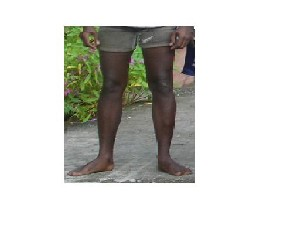 |
 omɔʈo ओमौटो MORPH: o-mɔʈo. VAR: ɑrɑmɔʈɔ आरामौटौ. N सं. legs; पैर.
omɔʈo ओमौटो MORPH: o-mɔʈo. VAR: ɑrɑmɔʈɔ आरामौटौ. N सं. legs; पैर.  ʈʰo-mɔʈo ठोमौटो. my legs. मेरे पैर. SD: body part term, शारीरिक अंग शब्दावली.
ʈʰo-mɔʈo ठोमौटो. my legs. मेरे पैर. SD: body part term, शारीरिक अंग शब्दावली.
omɔʈɔtʰumikʰu ओमौटौथूमीखू MORPH: o-mɔʈɔ-tʰumikʰu. VAR: ɔ-mɔʈo-tʰu-mikʰu औमौटोथूमीखू. N सं. sole; तलुआ.  ʈʰɔ-mɔʈo-tʰu-mikʰu ठौमौटोथूमीखू. my sole. मेरा तलुआ. SD: body part term, शारीरिक अंग शब्दावली.
ʈʰɔ-mɔʈo-tʰu-mikʰu ठौमौटोथूमीखू. my sole. मेरा तलुआ. SD: body part term, शारीरिक अंग शब्दावली.
omɔʈɔʈɔe ओमौटौटौए MORPH: o-mɔʈɔ-ʈɔe. N सं. upper bone, of foot; पैर की ऊपर वाली हड्डी. ʈʰ-o-mɔʈɔ-ʈɔe ठोमौटौटौए. the upper bone of my foot. मेरे पैर की ऊपर वाली हड्डी. SD: body part term, शारीरिक अंग शब्दावली.
ompʰoŋ ओम्फोङ MORPH: om-pʰoŋ. N सं. sides (of the dugong); बगल (डूगोंग). SD: body part term, शारीरिक अंग शब्दावली. SEE: oŋpʰoŋ ‘armpit’ ‘कांख; बगल ओङफोङ ’.
onrɛːpʈɔːy ओन्रैऽपटौऽय MORPH: on-rɛːpʈɔːy. N सं. backbone; रीढ़ की हड्डी. ŋ-onrɛːpʈɔːy ङोन्रैऽपटौऽय. backbone (your). रीढ़ की हड्डी (तुम्हारी). SD: body part term, शारीरिक अंग शब्दावली.
 onšoŋo1 ओन्शोङो MORPH: on-šoŋo. VAR: oŋšɔmo ओङशौमो; on-soːŋɔ ओन्सोऽङौ. N सं. whole body of human being; आदमी का पूरा शरीर. SD: body part term, शारीरिक अंग शब्दावली. SEE: onšoŋo2 ‘soul’ ‘आत्मा ओन्शोङोhm:{2}’.
onšoŋo1 ओन्शोङो MORPH: on-šoŋo. VAR: oŋšɔmo ओङशौमो; on-soːŋɔ ओन्सोऽङौ. N सं. whole body of human being; आदमी का पूरा शरीर. SD: body part term, शारीरिक अंग शब्दावली. SEE: onšoŋo2 ‘soul’ ‘आत्मा ओन्शोङोhm:{2}’.
 onšoŋoʈɔy ओन्शोङोटौय MORPH: onšoŋo-ʈɔy. N सं. skeleton, lit. body-bone; कंकाल, शाब्दिक अर्थः शरीर-हड्डी. SD: body part term, शारीरिक अंग शब्दावली.
onšoŋoʈɔy ओन्शोङोटौय MORPH: onšoŋo-ʈɔy. N सं. skeleton, lit. body-bone; कंकाल, शाब्दिक अर्थः शरीर-हड्डी. SD: body part term, शारीरिक अंग शब्दावली.
onto ओन्तो MORPH: on-to. N सं. forearm; कोहनी से कलाई तक का हिस्सा. ʈʰ-on-to ठोन्तो. my forearm. मेरा कोहनी से कलाई तक का हिस्सा. SD: body part term, शारीरिक अंग शब्दावली.
ontoʈɔe ओन्तोटौए MORPH: on-to-ʈɔe. N सं. the bone between the elbow and wrist; कलाई से कोहनी तक की हड्डी. ʈʰ-on-to-ʈɔe ठोनतोटौए. the bone between my elbow and wrist. मेरी कलाई से कोहनी तक की हड्डी. SD: body part term, शारीरिक अंग शब्दावली.
oŋcɔkʰui ओङचौखूई MORPH: oŋ-cɔkʰui. N सं. middle finger; बीच की उंगली, मध्यमा. SD: body part term, शारीरिक अंग शब्दावली.
 oŋkɑrɑ1 ओङकारा MORPH: oŋ-kɑrɑ. VAR: uŋ-kɑrɑ ऊङकारा. N सं. nails; नाख़ून. mɛŋ-oŋ-kɑrɑ मैङोङकारा. our nails. हमारे नाख़ून. SD: body part term, शारीरिक अंग शब्दावली.
oŋkɑrɑ1 ओङकारा MORPH: oŋ-kɑrɑ. VAR: uŋ-kɑrɑ ऊङकारा. N सं. nails; नाख़ून. mɛŋ-oŋ-kɑrɑ मैङोङकारा. our nails. हमारे नाख़ून. SD: body part term, शारीरिक अंग शब्दावली.  ʈʰ-uŋ-kɑrɑ ठूङकारा. my nails. मेरे नाख़ून.
ʈʰ-uŋ-kɑrɑ ठूङकारा. my nails. मेरे नाख़ून.  ʈʰoŋkɑrɑ ठोङकारा. my nail. मेरा नाख़ून. SEE: oŋkɑrɑ2 ‘point of the teeth of a crab’ ‘केकड़े के दांत की नोक ओङकाराhm:{2}’.
ʈʰoŋkɑrɑ ठोङकारा. my nail. मेरा नाख़ून. SEE: oŋkɑrɑ2 ‘point of the teeth of a crab’ ‘केकड़े के दांत की नोक ओङकाराhm:{2}’.
oŋkɑrɑ2 ओङकारा MORPH: oŋ-kɑrɑ. N सं. point of the teeth of a crab; केकड़े के दांत की नोक. SD: body part term, शारीरिक अंग शब्दावली. SEE: oŋkɑrɑ1 ‘nails’ ‘नाख़ून ओङकाराhm:{1}’.
oŋkenɑpcɔkʰo ओङकेनापचौखो MORPH: oŋ-kenɑp-cɔkʰo. N सं. thumb; अंगूठा.  ʈʰoŋ-kenɑp-cɔkʰo ठोङकेनापचौखो. my thumb. मेरा अंगूठा. SD: body part term, शारीरिक अंग शब्दावली.
ʈʰoŋ-kenɑp-cɔkʰo ठोङकेनापचौखो. my thumb. मेरा अंगूठा. SD: body part term, शारीरिक अंग शब्दावली.
oŋkorɔ ओङकोरौ MORPH: oŋ-korɔ. VAR: oŋ-kɔrɔ ओङकौरौ. N सं. palm; हथेली. ʈʰ-ɔŋ-korɔ ठौङकोरौ. my palm. मेरी हथेली. SD: body part term, शारीरिक अंग शब्दावली.
oŋkorɔtotbɔ ओङकोरौतोत्बौ MORPH: oŋ-korɔ-tot-bɔ. VAR: oŋ-kɔrɔ-ʈoʈ-bɔ ओङकौरौटोटबौ. N सं. upper side, of palm; हथेली का ऊपर वाला भाग. ʈʰ-oŋ-korɔ-tot-bɔ ठोङकोरौतोत्बौ. the upper side of my palm. मेरी हथेली का ऊपर वाला भाग. SD: body part term, शारीरिक अंग शब्दावली.
oŋkɔrɔtotcɔʈɔ ओङकौरौतोतचौटौ MORPH: oŋ-kɔrɔ-tot-cɔʈɔ. N सं. lame, handicapped; लूला, मुड़े हुए हाथ. SD: body part term, शारीरिक अंग शब्दावली.
oŋpʰoŋ ओङफोङ MORPH: oŋ-pʰoŋ. VAR: ɔm-foŋ औमफोङ; um-pʰoŋ ऊमफोङ. N सं. armpit; कांख; बगल. ʈʰ-oŋ-pʰoŋ ठोङफोङ. my armpit. मेरी बगल. SD: body part term, शारीरिक अंग शब्दावली. SEE: ompʰoŋ ‘sides (of Dugong)’ ‘बगल (डूगोंग) ओम्फोङ ’.
oŋrɔno ओङरौनो MORPH: oŋ-rɔno. N सं. ankle; टखना. ʈʰ-oŋ-rɔno ठोङरौनो. my ankle. मेरा टखना.  ʈʰumroŋo ठूमरोङो. my ankle. मेरा टखना. SD: body part term, शारीरिक अंग शब्दावली.
ʈʰumroŋo ठूमरोङो. my ankle. मेरा टखना. SD: body part term, शारीरिक अंग शब्दावली.
oŋʈɔe ओङटौए MORPH: oŋ-ʈɔe. N सं. wrist bone; कलाई की हड्डी. ʈʰ-oŋ-ʈɔe ठोङटौए. my wrist bone. मेरी कलाई की हड्डी. SD: body part term, शारीरिक अंग शब्दावली.
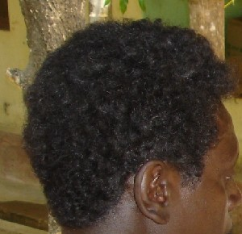 |
 otbec1 ओत्बेच MORPH: ot-bec. N सं. hair; बाल. ʈʰ-ot-bec ठोत्बेच. my hair. मेरे बाल.
otbec1 ओत्बेच MORPH: ot-bec. N सं. hair; बाल. ʈʰ-ot-bec ठोत्बेच. my hair. मेरे बाल.  mɛŋ-ot-bec मेङोत्बेच. our hair. हमारे बाल. SD: body part term, शारीरिक अंग शब्दावली. SEE: otbec2 ‘nails’ ‘नाख़ून ओत्बेचhm:{2}’; otbec3 ‘skin’ ‘त्वचा ओत्बेचhm:{3}’.
mɛŋ-ot-bec मेङोत्बेच. our hair. हमारे बाल. SD: body part term, शारीरिक अंग शब्दावली. SEE: otbec2 ‘nails’ ‘नाख़ून ओत्बेचhm:{2}’; otbec3 ‘skin’ ‘त्वचा ओत्बेचhm:{3}’.
 otbec2 ओत्बेच MORPH: ot-bec. N सं. nails; नाख़ून. ʈʰ-ot-bec ठोत्बेच. my nail. मेरे नाख़ून.
otbec2 ओत्बेच MORPH: ot-bec. N सं. nails; नाख़ून. ʈʰ-ot-bec ठोत्बेच. my nail. मेरे नाख़ून.  mɛŋ-ot-bec मेङोत्बेच. our nails. हमारे नाख़ून. SD: body part term, शारीरिक अंग शब्दावली. SEE: otbec1 ‘hair’ ‘बाल ओत्बेचhm:{1}’; otbec3 ‘skin’ ‘त्वचा ओत्बेचhm:{3}’.
mɛŋ-ot-bec मेङोत्बेच. our nails. हमारे नाख़ून. SD: body part term, शारीरिक अंग शब्दावली. SEE: otbec1 ‘hair’ ‘बाल ओत्बेचhm:{1}’; otbec3 ‘skin’ ‘त्वचा ओत्बेचhm:{3}’.
 otbec3 ओत्बेच MORPH: ot-bec. N सं. skin; त्वचा. ʈʰ-ot-bec ठोत्बेच. my skin. मेरी त्वचा.
otbec3 ओत्बेच MORPH: ot-bec. N सं. skin; त्वचा. ʈʰ-ot-bec ठोत्बेच. my skin. मेरी त्वचा.  mɛŋ-ot-bec मेङोत्बेच. our skin. हमारी त्वचा. SD: body part term, शारीरिक अंग शब्दावली. SEE: otbec1 ‘hair’ ‘बाल ओत्बेचhm:{1}’; otbec2 ‘nails’ ‘नाख़ून ओत्बेचhm:{2}’.
mɛŋ-ot-bec मेङोत्बेच. our skin. हमारी त्वचा. SD: body part term, शारीरिक अंग शब्दावली. SEE: otbec1 ‘hair’ ‘बाल ओत्बेचhm:{1}’; otbec2 ‘nails’ ‘नाख़ून ओत्बेचhm:{2}’.
otben ओत्बेन MORPH: ot-ben. N सं. bone, back shoulder; कंधे के पीछे की हड्डी. SD: body part term, शारीरिक अंग शब्दावली.
 otbɛc ओत्बैच MORPH: ot-bɛc. N सं. hair; body hair; बाल; रोआं.
otbɛc ओत्बैच MORPH: ot-bɛc. N सं. hair; body hair; बाल; रोआं.  ʈʰot-bɛc; ʈʰɛr-bɛc ठोतबैच; ठैर-बैच. my hair. मेरे बाल. bec-e-beliŋ बेचेबेलीङ. haircut. बाल काटना. ʈʰɛr ʈɑŋo bɛc ठैरटाङोबैच. my locks of hair. मेरे बालों की लटें. SD: body part term, शारीरिक अंग शब्दावली.
ʈʰot-bɛc; ʈʰɛr-bɛc ठोतबैच; ठैर-बैच. my hair. मेरे बाल. bec-e-beliŋ बेचेबेलीङ. haircut. बाल काटना. ʈʰɛr ʈɑŋo bɛc ठैरटाङोबैच. my locks of hair. मेरे बालों की लटें. SD: body part term, शारीरिक अंग शब्दावली.
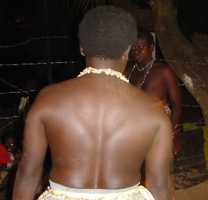 |
 otbo1 ओत्बो MORPH: ot-bo. VAR: ɔt-bɔ औत्बौ; utbɔː ऊतबौ. N सं. back; पीठ. ot-bot-pʰiri ओत बोत फीरी. Hit on the back by arrows. पीठ पर तीर से मारो।.
otbo1 ओत्बो MORPH: ot-bo. VAR: ɔt-bɔ औत्बौ; utbɔː ऊतबौ. N सं. back; पीठ. ot-bot-pʰiri ओत बोत फीरी. Hit on the back by arrows. पीठ पर तीर से मारो।.  ʈʰot-bo ठोत्बो. my back. मेरी कमर. SD: body part term, शारीरिक अंग शब्दावली. SEE: otbo2 ‘behind’ ‘पीछे ओत्बोhm:{2}’; otbo3 ‘heart (his)’ ‘दिल (उसका) ओत्बोhm:{3}’.
ʈʰot-bo ठोत्बो. my back. मेरी कमर. SD: body part term, शारीरिक अंग शब्दावली. SEE: otbo2 ‘behind’ ‘पीछे ओत्बोhm:{2}’; otbo3 ‘heart (his)’ ‘दिल (उसका) ओत्बोhm:{3}’.
 otbo2 ओत्बो MORPH: ot-bo. VAR: ɔt-bɔ औत्बौ; utbɔː ऊतबौ. DEIXIS डीक्सीस. behind; पीछे. SD: body part term, शारीरिक अंग शब्दावली. SEE: otbo1 ‘back’ ‘पीठ ओत्बोhm:{1}’; otbo3 ‘heart (his)’ ‘दिल (उसका) ओत्बोhm:{3}’.
otbo2 ओत्बो MORPH: ot-bo. VAR: ɔt-bɔ औत्बौ; utbɔː ऊतबौ. DEIXIS डीक्सीस. behind; पीछे. SD: body part term, शारीरिक अंग शब्दावली. SEE: otbo1 ‘back’ ‘पीठ ओत्बोhm:{1}’; otbo3 ‘heart (his)’ ‘दिल (उसका) ओत्बोhm:{3}’.
otbo3 ओत्बो MORPH: ot-bo. N सं. heart (his); दिल (उसका). SD: body part term, शारीरिक अंग शब्दावली. SEE: otbo1 ‘back’ ‘पीठ ओत्बोhm:{1}’; otbo2 ‘behind’ ‘पीछे ओत्बोhm:{2}’.
otbotutɖello2 ओत्बोतूत्डेल्लो MORPH: ot-bo-tut-ɖello. Etym: Jeru; जेरू. VAR: ot-bo-ɛt-ɖɛllo ओत्बोऐत्डैल्लो. N सं. heart; दिल. ʈʰ-ot-bo-tut-ɖello ठोत्बोतूत्डेल्लो. my heart. मेरा दिल. SD: body part term, शारीरिक अंग शब्दावली. SEE: otbotutdelo1 ‘life’ ‘ज़िंदगी ओत्बोतूत्देलोhm:{1}’.
otbɔːk ओतबौऽक MORPH: ot-bɔːk. N सं. head, of penis; लिंग का अगला हिस्सा. SD: body part term, शारीरिक अंग शब्दावली.
 otcɑlɑʈɔe ओत्चालाटौए MORPH: ot-cɑlɑ-ʈɔe. VAR: ot-cɑlɑ-ʈɔy ओतचालाटौय. N सं. ribs; पसलियां. ʈʰ-ot-cɑlɑ-ʈɔe ठोत्चालाटौए. my ribs. मेरी पसलियां. SD: body part term, शारीरिक अंग शब्दावली.
otcɑlɑʈɔe ओत्चालाटौए MORPH: ot-cɑlɑ-ʈɔe. VAR: ot-cɑlɑ-ʈɔy ओतचालाटौय. N सं. ribs; पसलियां. ʈʰ-ot-cɑlɑ-ʈɔe ठोत्चालाटौए. my ribs. मेरी पसलियां. SD: body part term, शारीरिक अंग शब्दावली.
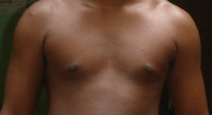 |
 otcɑr ओत्चार MORPH: ot-cɑr. VAR: ɔt-cɑr औत्चार; ot-cʰɑr ओत्छार; ot-cɑro ओत्चारो. N सं. chest; middle of the chest; सीना; छाती का मध्य भाग.
otcɑr ओत्चार MORPH: ot-cɑr. VAR: ɔt-cɑr औत्चार; ot-cʰɑr ओत्छार; ot-cɑro ओत्चारो. N सं. chest; middle of the chest; सीना; छाती का मध्य भाग.  ʈʰ-ot-cʰɑr ठोतछार. my chest. मेरा सीना. SD: body part term, शारीरिक अंग शब्दावली.
ʈʰ-ot-cʰɑr ठोतछार. my chest. मेरा सीना. SD: body part term, शारीरिक अंग शब्दावली.
otcotobɑʈ ओत्चोतोबाट MORPH: ot-coto-bɑʈ. N सं. nipple; स्तनाग्र. ʈʰ-otcotobɑʈ ठोत्चोतोबाट. my nipples. मेरे स्तनाग्र. SD: body part term, शारीरिक अंग शब्दावली.
otcɔr2 ओत्चौर MORPH: ot-cɔr. N सं. skin; त्वचा. SD: body part term, शारीरिक अंग शब्दावली. SEE: otcɔr1 ‘marks, on crocodile’s back’ ‘निशान, मगरमच्छ के पीठ पर बने ओत्चौरhm:{1}’.
otkɔrno ओत्कौरनो MORPH: ot-kɔrno. VAR: ɔt-kɔrnɔ औतकौरनौ. N सं. lungs; फेफड़े. ʈʰ-ot-kɔrno ठोत्कौरनो. my lungs. मेरे फेफड़े. SD: body part term, शारीरिक अंग शब्दावली.
ototɑrɑtɛi ओतोतारातैई MORPH: oto-tɑrɑ-tɛi. N सं. blood, in the lungs; फेफड़ों का ख़ून. ʈʰ-ototɑrɑtɛi ठोतोतारातैई. blood of my lungs. मेरे फेफड़ों का ख़ून. SD: body part term, शारीरिक अंग शब्दावली.
otʈɛŋ ओत्टैङ MORPH: ot-ʈɛŋ. N सं. temple; कनपटी. ʈʰotʈɛŋ ठोतटैङ. my temple. मेरी कनपटी. SD: body part term, शारीरिक अंग शब्दावली.
otʈɔr ओत्टौर MORPH: ot-ʈɔr. N सं. head, of penis; लिंग का अग्र भाग. ʈʰ-ot-ʈɔr ठोत्टौर. head of my penis. मेरे लिंग का अग्र भाग. SD: body part term, शारीरिक अंग शब्दावली.
oʈɔy ओटौय MORPH: o-ʈɔy. N सं. bone; हड्डी. ʈʰ-oʈɔy ठोटौय. my bone. मेरी हड्डी. SD: body part term, शारीरिक अंग शब्दावली.
oʈʈoye ओट्टोये MORPH: oʈ-ʈoye. N सं. spinal cord; रीढ़ की हड्डी. SD: body part term, शारीरिक अंग शब्दावली.
oʈʈɔek ओट्टौएक N सं. neck; गर्दन. oʈʈɔek pʰo ओट्टौएक फो. Behead. गर्दन उड़ा दो।. SD: body part term, शारीरिक अंग शब्दावली.
ɔncɔʈɔ औन्चौटौ MORPH: ɔn-cɔʈɔ. N सं. crippled hand; टूटा हाथ. ŋɔncɔʈɔ ङौन्चौटौ. your crippled hand. तुम्हारा टूटा हाथ. SD: body part term, शारीरिक अंग शब्दावली.
ɔŋkɑrɑ औङकारा MORPH: ɔŋ-kɑrɑ. N सं. finger; उंगली. meŋ-ɔŋ-kɑrɑ मेङौङकारा. our fingers. हमारी उंगलियां. SD: body part term, शारीरिक अंग शब्दावली.
ɔŋkorɔ औङकोरौ MORPH: ɔŋ-korɔ. N सं. hand; हाथ. meŋ-ɔŋ-korɔ मेङौङकोरौ. our hands. हमारा हाथ. SD: body part term, शारीरिक अंग शब्दावली.
ɔtcɔr औत्चौर MORPH: ɔt-cɔr. N सं. scales of fish; मछली के छिलके. SD: body part term, शारीरिक अंग शब्दावली.
ɔtcɔːʈʈɔ औत्चौऽट्टौ MORPH: ɔt-cɔːʈʈɔ. N सं. hump; कूबड़. ŋ-ɔtcɔːʈʈɔ ङौतचौऽट्टौ. your hump. तुम्हारा कूबड़. SD: body part term, शारीरिक अंग शब्दावली.
ɔtkɔwbɑːlɔ औत्कौवबाऽलो MORPH: ɔtkɔw-bɑːlɔ